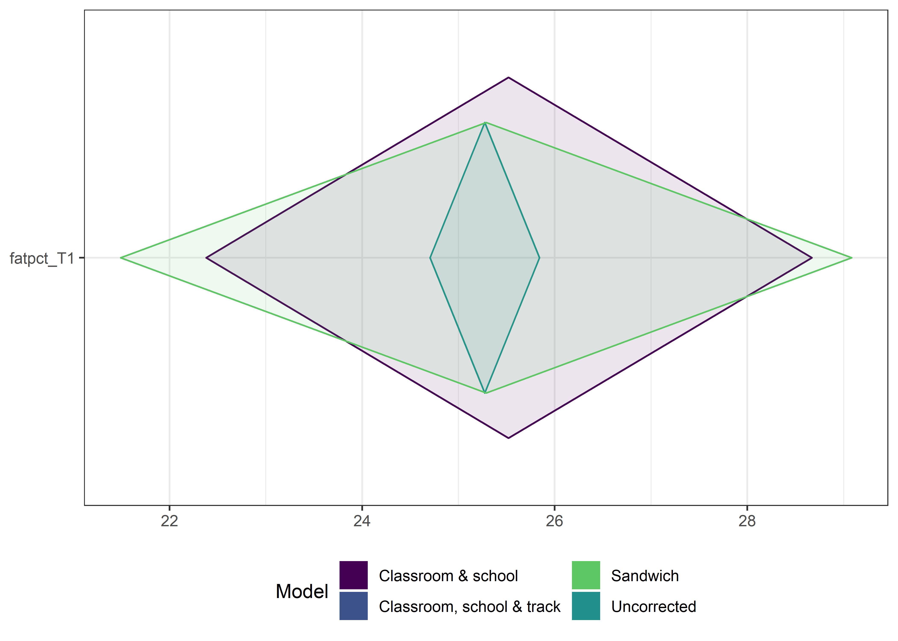
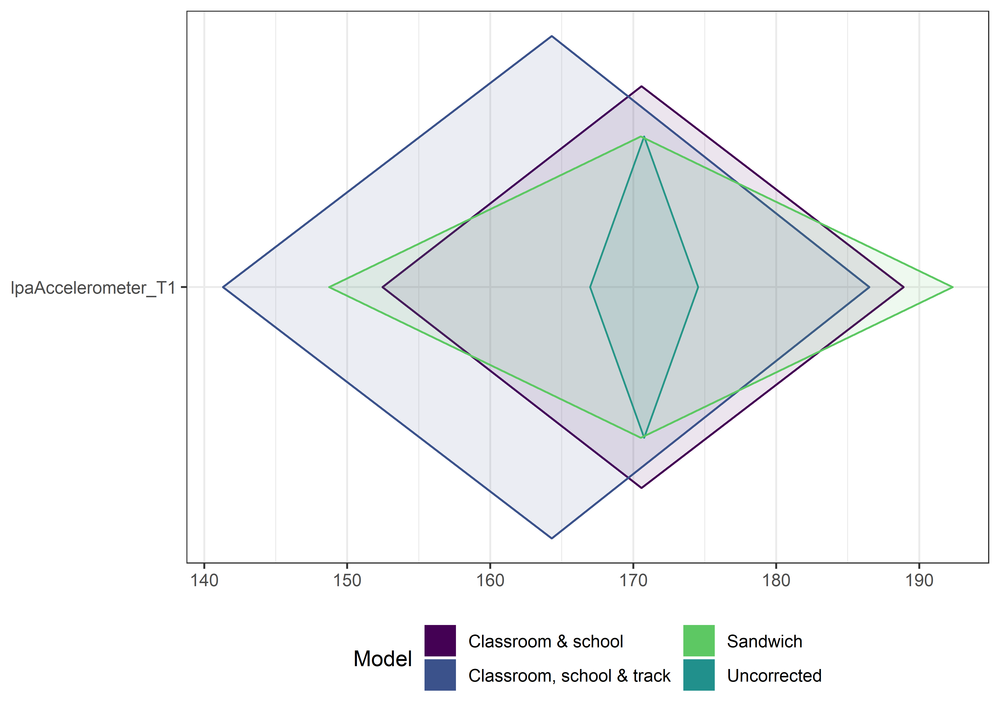
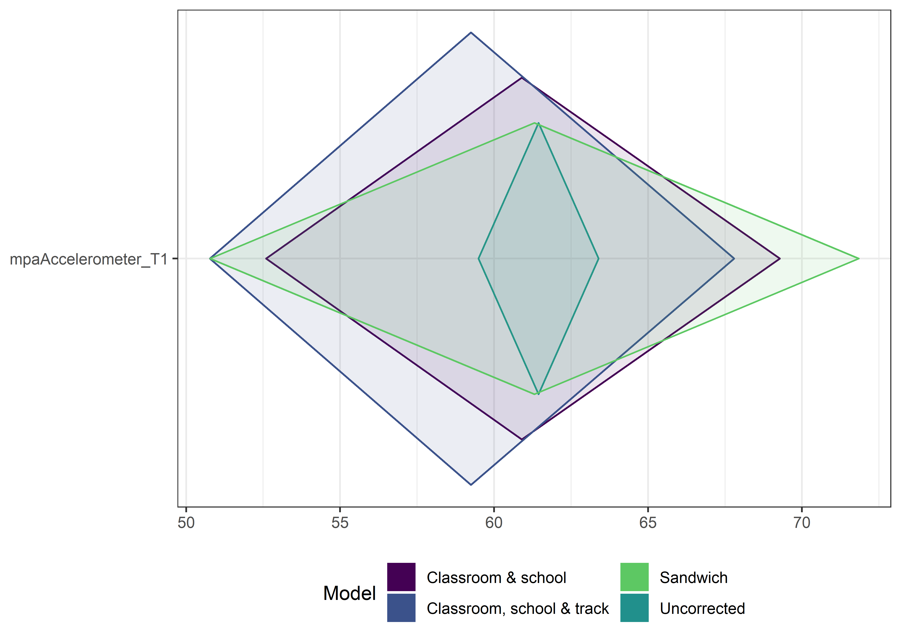
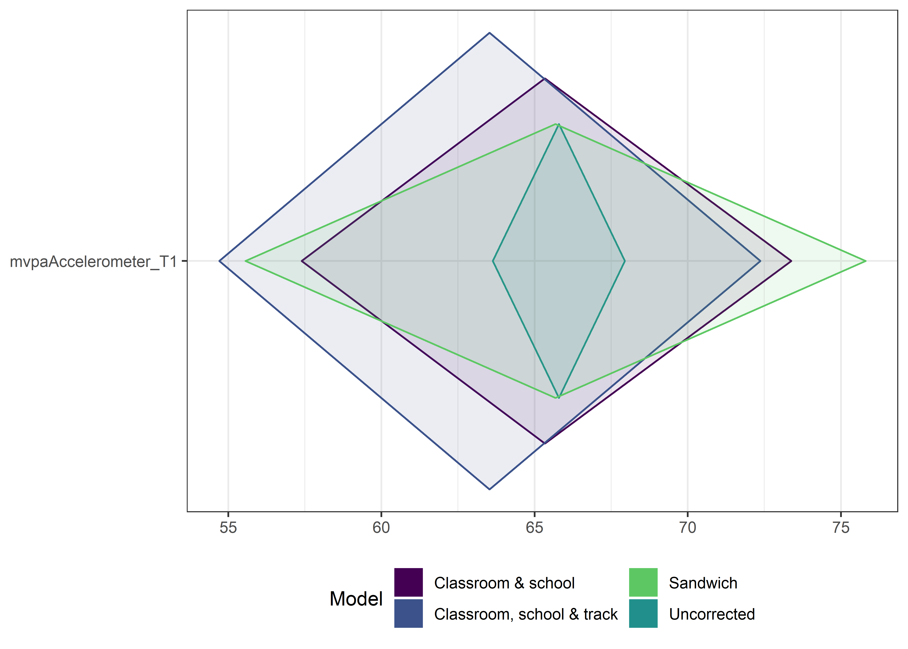

Tables and estimators
Introduction
This section describes how confidence intervals were estimated, as well as presenting numeric tables of characteristics of all variables involved.
Means with CIs taking clustering into account
The code chunks create linear models for all variables. The results are used to estimate confidence intervals and intra-class correlations (ICC).
The CIs are calculated with a multilevel model, accounting for school and classroom membership.
# Create a vector with all names of the variables we want. Exclude T3 variables.
names <- df %>% dplyr::select(-id, -intervention, -group, -school, -girl, -SB_selfRepSitbreaksDidNotSit30min_T1, -track, -trackSchool, -contains("_T3"), -contains("_diff")) %>% names(.)
# Create empty soon-to-be-filled objects
m <- NA
mean <- NA
m_p <- NA
ci_low <- NA
ci_high <- NA
ICC_group <- NA
ICC_School <- NA
nonmissings <- NA
## # Use this to test a single variable:
## dftest <- df #%>% na.omit()
## m <- lme4::lmer(mvpaAccelerometer_T1 ~ (1|school) + (1|group), data=dftest)
## mean <- lme4::fixef(m)
## m_p <- profile(m, which = "beta_")
## ci_low <- confint(m_p)[, 1]
## ci_high <- confint(m_p)[, 2]
## ICC_group <- sjstats::icc(m)[1]
## ICC_School <- sjstats::icc(m)[2]
## nonmissings <- length(m@resp$y)
# # UNCOMMENT below and run code
# for (i in names){ # Loop over each variable name for all participants, extract statistics
# m <- lme4::lmer(paste0(i," ~ (1|school) + (1|group)"), data=df)
# mean[i] <- lme4::fixef(m)
# m_p <- profile(m, which = "beta_")
# ci_low[i] <- confint(m_p)[, 1]
# ci_high[i] <- confint(m_p)[, 2]
# ICC_group[i] <- sjstats::icc(m)[1]
# ICC_School[i] <- sjstats::icc(m)[2]
# nonmissings[i] <- length(m@resp$y)
# }
#
# vardatatable <- data_frame(
# Variable = stringr::str_sub(names(mean), end = -4), #remove "_T1" from names
# "Mean" = round(mean, 1) %>% format(., nsmall = 1),
# "CI95" = paste(round(ci_low, 1) %>% format(., nsmall = 1), " - ", round(ci_high, 1) %>% format(., nsmall = 1)),
# "ICC class" =ifelse(round(ICC_group, 3) == 0, "< 0.001", round(ICC_group, 3) %>% format(., nsmall = 3)),
# "ICC school" = ifelse(round(ICC_School, 3) == 0, "< 0.001", round(ICC_School, 3) %>% format(., nsmall = 3)),
# n = nonmissings) %>%
# dplyr::arrange(Variable) %>%
# dplyr::filter(Variable != "") %>% #remove first row, which is empty
# as.data.frame()
#
# ci_total <- data_frame(
# "ciLo" = ci_low,
# "mean" = mean,
# "ciHi" = ci_high,
# "diamondlabels" = names(mean)) %>%
# dplyr::filter(diamondlabels != "") %>% #remove first row, which is empty
# as.data.frame()
#
# # To improve readability, change the variables which are expressed in minutes, to the form "Xh Ymin"
# timeVariables <- c("mvpaAccelerometer", "mpaAccelerometer", "vpaAccelerometer", "lpaAccelerometer", "weartimeAccelerometer", "sitLieAccelerometer", "standingAccelerometer", "mvpaAccelerometer_noCutOff", "mpaAccelerometer_noCutOff", "vpaAccelerometer_noCutOff", "lpaAccelerometer_noCutOff", "weartimeAccelerometer_noCutOff", "sitLieAccelerometer_noCutOff", "standingAccelerometer_noCutOff")
#
# for (variableToChange in timeVariables) {
# originalMean <- vardatatable[vardatatable$Variable == variableToChange, "Mean"] %>% as.numeric()
# newMean <- paste0(floor(originalMean/60), "h ", round(originalMean, 0) %% 60, "min")
# vardatatable[vardatatable$Variable == variableToChange, "Mean"] <- newMean
# originalCI <- vardatatable[vardatatable$Variable == variableToChange, "CI95"]
# originalCIL <- stringi::stri_extract_first_words(originalCI) %>% as.numeric()
# originalCIH <- stringi::stri_extract_last_words(originalCI) %>% as.numeric()
# newCI <- paste0(floor(originalCIL/60), "h ", round(originalCIL, 0) %% 60, "min - ",
# floor(originalCIH/60), "h ", round(originalCIH, 0) %% 60, "min")
# vardatatable[vardatatable$Variable == variableToChange, "CI95"] <- newCI
# }
#
# save(vardatatable, file = "./Rdata_files/vardatatable.Rdata")
# save(ci_total, file = "./Rdata_files/ci_total.Rdata")
load("./Rdata_files/vardatatable.Rdata")
load("./Rdata_files/ci_total.Rdata")
vardatatable2 <- vardatatable
vardatatable2$Variable <- gsub("mvpaAccelerometer", "Daily moderate-to-vigorous PA time (accelerometer)*", vardatatable2$Variable)
vardatatable2$Variable <- gsub("padaysLastweek", "Number of days with >30 MVPA min previous week (self-report)*", vardatatable2$Variable)
vardatatable2$Variable <- gsub("sitLieAccelerometer", "Daily time spent sitting or lying down (accelerometer)*", vardatatable2$Variable)
vardatatable2$Variable <- gsub("sitBreaksAccelerometer", "Daily number of times sitting was interrupted (accelerometer)*", vardatatable2$Variable)
vardatatable2$Variable <- gsub("lpaAccelerometer", "Daily light PA time (accelerometer)", vardatatable2$Variable)
vardatatable2$Variable <- gsub("standingAccelerometer", "Daily standing time (accelerometer)", vardatatable2$Variable)
vardatatable2 <- vardatatable2 %>%
dplyr::filter(Variable == "Daily moderate-to-vigorous PA time (accelerometer)*" |
Variable == "Daily time spent sitting or lying down (accelerometer)*" |
Variable == "Daily number of times sitting was interrupted (accelerometer)*" |
Variable == "Number of days with >30 MVPA min previous week (self-report)*" |
Variable == "Daily light PA time (accelerometer)" |
Variable == "Daily standing time (accelerometer)") %>%
dplyr::mutate(orderVariable = ifelse(`Variable` == "Daily moderate-to-vigorous PA time (accelerometer)*", "a",
ifelse(`Variable` == "Daily light PA time (accelerometer)", "b",
ifelse(`Variable` == "Daily standing time (accelerometer)", "c",
ifelse(`Variable` == "Daily time spent sitting or lying down (accelerometer)*", "d",
ifelse(`Variable` == "Daily number of times sitting was interrupted (accelerometer)*", "e",
ifelse(`Variable` == "Number of days with >30 MVPA min previous week (self-report)*", "f", NA))))))) %>%
dplyr::arrange(orderVariable) %>%
dplyr::select(-orderVariable)
vardatatable2 %>%
papaja::apa_table(
caption = "Primary outcome variables with their class and school ICCs. Primary outcome variables highlighted with asterisks.",
escape = TRUE, format.args = list(digits = c(3, 0), margin = 2)
)| Variable | Mean | CI95 | ICC class | ICC school | n |
|---|---|---|---|---|---|
| Daily moderate-to-vigorous PA time (accelerometer)* | 1h 5min | 0h 57min - 1h 13min | 0.089 | 0.062 | 731 |
| Daily light PA time (accelerometer) | 2h 51min | 2h 32min - 3h 9min | 0.111 | 0.110 | 731 |
| Daily standing time (accelerometer) | 1h 24min | 1h 15min - 1h 34min | 0.122 | 0.041 | 731 |
| Daily time spent sitting or lying down (accelerometer)* | 8h 44min | 8h 4min - 9h 24min | 0.115 | 0.138 | 731 |
| Daily number of times sitting was interrupted (accelerometer)* | 25.8 | 23.5 - 28.0 | 0.047 | 0.080 | 731 |
| Number of days with >30 MVPA min previous week (self-report)* | 2.8 | 2.6 - 3.0 | 0.047 | < 0.001 | 1082 |
All main variables, their means, CIs and ICCs.
Values calculated with a multilevel model accounting for school and classroom.
Assorted tables with ICCs
Description
See tabs above for differently sorted tables
Model with school and class: ICC top 20 items, sorted by classroom ICC
vardatatable %>%
dplyr::select(Variable, `ICC class`, `ICC school`, n) %>%
arrange(desc(`ICC class`)) %>% slice(1:20) %>%
as.tbl() %>%
papaja::apa_table(caption = "Intra-class correlations sorted by classroom ICC",
format.args = list(digits = c(3, 0), margin = 2))| Variable | ICC class | ICC school | n |
|---|---|---|---|
| standingAccelerometer | 0.122 | 0.041 | 731 |
| sitLieAccelerometer | 0.115 | 0.138 | 731 |
| PA_intention_02 | 0.112 | < 0.001 | 1073 |
| lpaAccelerometer | 0.111 | 0.110 | 731 |
| sitLieAccelerometer_noCutOff | 0.109 | 0.128 | 895 |
| standingAccelerometer_noCutOff | 0.109 | 0.045 | 895 |
| PA_intention | 0.106 | < 0.001 | 1073 |
| lpaAccelerometer_noCutOff | 0.096 | 0.098 | 895 |
| pafreqUsually | 0.095 | 0.002 | 1082 |
| mpaAccelerometer | 0.092 | 0.087 | 731 |
| mvpaAccelerometer | 0.089 | 0.062 | 731 |
| PA_intention_01 | 0.089 | < 0.001 | 1073 |
| pahrsUsually | 0.085 | 0.004 | 1082 |
| SB_selfRepSitbreaksWorkPlacement | 0.082 | 0.028 | 1020 |
| mpaAccelerometer_noCutOff | 0.078 | 0.090 | 895 |
| mvpaAccelerometer_noCutOff | 0.077 | 0.065 | 895 |
| walkStepsAccelerometer | 0.075 | 0.074 | 731 |
| PA_intrinsic | 0.074 | < 0.001 | 1074 |
| PA_autonomous | 0.073 | < 0.001 | 1078 |
| PA_autonomous_07 | 0.073 | 0.005 | 1070 |
Model with school and class: ICC top 20 items, sorted by school ICC
vardatatable %>% dplyr::select(Variable, `ICC class`, `ICC school`, n) %>%
arrange(desc(`ICC school`)) %>%
slice(1:20) %>%
papaja::apa_table(caption = "Intra-class correlations sorted by school ICC",
format.args = list(digits = c(3, 0), margin = 2))| Variable | ICC class | ICC school | n |
|---|---|---|---|
| sitLieAccelerometer | 0.115 | 0.138 | 731 |
| sitLieAccelerometer_noCutOff | 0.109 | 0.128 | 895 |
| fatpct | 0.002 | 0.123 | 942 |
| lpaAccelerometer | 0.111 | 0.110 | 731 |
| lpaAccelerometer_noCutOff | 0.096 | 0.098 | 895 |
| mpaAccelerometer_noCutOff | 0.078 | 0.090 | 895 |
| mpaAccelerometer | 0.092 | 0.087 | 731 |
| sitBreaksAccelerometer | 0.047 | 0.080 | 731 |
| walkStepsAccelerometer_noCutOff | 0.067 | 0.077 | 895 |
| walkStepsAccelerometer | 0.075 | 0.074 | 731 |
| mvpaAccelerometer_noCutOff | 0.077 | 0.065 | 895 |
| mvpaAccelerometer | 0.089 | 0.062 | 731 |
| SB_avgDailySelfRepSittingHoursLastWeekWeekend | 0.046 | 0.055 | 1062 |
| SB_avgDailySelfRepSittingHoursLastWeekWeekday | 0.037 | 0.054 | 1062 |
| weartimeAccelerometer | 0.028 | 0.046 | 731 |
| standingAccelerometer_noCutOff | 0.109 | 0.045 | 895 |
| standingAccelerometer | 0.122 | 0.041 | 731 |
| symptom | 0.023 | 0.039 | 1084 |
| sitBreaksAccelerometer_noCutOff | 0.044 | 0.037 | 895 |
| SB_intention | 0.014 | 0.035 | 1064 |
Model with school, class and educational track
The model below is the same as the one above, except it adds educational track.
#library(sjstats)
#library(lme4)
names <- df %>% dplyr::select(-id, -intervention, -group, -school, -girl, -SB_selfRepSitbreaksDidNotSit30min_T1, -track, -trackSchool, -contains("_T3"), -contains("_diff")) %>% names(.)
# Create empty soon-to-be-filled objects
m <- NA
mean <- NA
m_p <- NA
ci_low <- NA
ci_high <- NA
ICC_group <- NA
ICC_School <- NA
nonmissings <- NA
ICC_track <- NA
## To test the code with a single variable:
# dftest <- df #%>% na.omit()
# m <- lme4::lmer(sitLieAccelerometer_T1 ~ (1|school) + (1|group) + (1|track), data=df)
# mean <- lme4::fixef(m)
# m_p <- profile(m)
# ci_low <- confint(m_p)[5]
# ci_high <- confint(m_p)[10]
# ICC_group <- icc(m)[1]
# ICC_School <- icc(m)[2]
# nonmissings <- length(m@resp$y)
# # UNCOMMENT below and run code
# for (i in names){ # Loop over each variable name for all participants, extract statistics
# m <- lme4::lmer(paste0(i," ~ (1|school) + (1|group) + (1|track)"), data=df)
# mean[i] <- lme4::fixef(m)
# m_p <- profile(m, which = "beta_")
# ci_low[i] <- confint(m_p)[1]
# ci_high[i] <- confint(m_p)[2]
# ICC_group[i] <- sjstats::icc(m)[1]
# ICC_School[i] <- sjstats::icc(m)[3]
# ICC_track[i] <- sjstats::icc(m)[2]
# nonmissings[i] <- length(m@resp$y)
# }
#
# vardatatable_containing_edutrack <- data_frame(
# Variable = stringr::str_sub(names(mean), end = -4), #remove "_T1" from names
# "Mean" = round(mean, 1) %>% format(., nsmall = 1),
# "CI95" = paste(round(ci_low, 1) %>% format(., nsmall = 1), " - ", round(ci_high, 1) %>% format(., nsmall = 1)),
# "ICC class" =ifelse(round(ICC_group, 3) == 0, "< 0.001", round(ICC_group, 3) %>% format(., nsmall = 3)),
# "ICC school" = ifelse(round(ICC_School, 3) == 0, "< 0.001", round(ICC_School, 3) %>% format(., nsmall = 3)),
# "ICC educational track" = ifelse(round(ICC_track, 3) == 0, "< 0.001", round(ICC_track, 3) %>% format(., nsmall = 3)),
# n = nonmissings) %>%
# dplyr::arrange(Variable) %>%
# dplyr::filter(Variable != "") #remove first row, which is empty
#
# ci_edutrack <- data_frame(
# "ciLo" = ci_low,
# "mean" = mean,
# "ciHi" = ci_high,
# "diamondlabels" = names(mean)) %>%
# dplyr::filter(diamondlabels != "") %>% #remove first row, which is empty
# as.data.frame()
#
# # To improve readability, change the variables which are expressed in minutes, to the form "Xh Ymin"
# timeVariables <- c("mvpaAccelerometer", "mpaAccelerometer", "vpaAccelerometer", "lpaAccelerometer", "weartimeAccelerometer", "sitLieAccelerometer", "standingAccelerometer", "mvpaAccelerometer_noCutOff", "mpaAccelerometer_noCutOff", "vpaAccelerometer_noCutOff", "lpaAccelerometer_noCutOff", "weartimeAccelerometer_noCutOff", "sitLieAccelerometer_noCutOff", "standingAccelerometer_noCutOff")
#
# for (variableToChange in timeVariables) {
# originalMean <- vardatatable_containing_edutrack[vardatatable_containing_edutrack$Variable == variableToChange, "Mean"] %>% as.numeric()
# newMean <- paste0(floor(originalMean/60), "h ", round(originalMean, 0) %% 60, "min")
# vardatatable_containing_edutrack[vardatatable_containing_edutrack$Variable == variableToChange, "Mean"] <- newMean
# originalCI <- vardatatable_containing_edutrack[vardatatable_containing_edutrack$Variable == variableToChange, "CI95"]
# originalCIL <- stringi::stri_extract_first_words(originalCI) %>% as.numeric()
# originalCIH <- stringi::stri_extract_last_words(originalCI) %>% as.numeric()
# newCI <- paste0(floor(originalCIL/60), "h ", round(originalCIL, 0) %% 60, "min - ",
# floor(originalCIH/60), "h ", round(originalCIH, 0) %% 60, "min")
# vardatatable_containing_edutrack[vardatatable_containing_edutrack$Variable == variableToChange, "CI95"] <- newCI
# }
#
# save(vardatatable_containing_edutrack, file = "./Rdata_files/vardatatable_containing_edutrack.Rdata")
# save(ci_edutrack, file = "./Rdata_files/ci_edutrack.Rdata")
load("./Rdata_files/vardatatable_containing_edutrack.Rdata")
load("./Rdata_files/ci_edutrack.Rdata")Model with school, class and track: Top 20 items, sorted by school
vardatatable_containing_edutrack %>%
dplyr::select(Variable, `ICC educational track`, `ICC class`, `ICC school`, n) %>%
arrange(desc(`ICC school`)) %>%
top_n(20) %>%
papaja::apa_table(caption = "Intra-class correlations sorted by school ICC",
format.args = list(digits = c(0), margin = 2))| Variable | ICC educational track | ICC class | ICC school | n |
|---|---|---|---|---|
| PA_descriptiveNorm_01 | 0.054 | < 0.001 | 0.012 | 1073 |
| paminLastweek | 0.005 | < 0.001 | 0.011 | 1082 |
| PA_integrated | 0.082 | < 0.001 | 0.008 | 1073 |
| PA_autonomous | 0.073 | 0.005 | 0.006 | 1078 |
| PA_intrinsic | 0.070 | 0.009 | 0.006 | 1074 |
| pafreqUsually | 0.069 | 0.023 | 0.005 | 1082 |
| PA_descriptiveNorm | 0.052 | 0.006 | 0.004 | 1073 |
| pahrsUsually | 0.051 | 0.033 | 0.004 | 1082 |
| PA_injunctiveNorm | < 0.001 | 0.005 | 0.003 | 1073 |
| PA_injunctiveNorm_01 | < 0.001 | 0.005 | 0.003 | 1073 |
| leisuretimeMvpaHoursLastweek | 0.037 | 0.004 | < 0.001 | 1082 |
| PA_actCop | 0.036 | 0.005 | < 0.001 | 1073 |
| PA_actionplan | 0.031 | 0.013 | < 0.001 | 1073 |
| PA_actionPlanning_01 | 0.033 | 0.006 | < 0.001 | 1073 |
| PA_actionPlanning_02 | 0.017 | 0.015 | < 0.001 | 1073 |
| PA_actionPlanning_03 | 0.020 | 0.021 | < 0.001 | 1073 |
| PA_actionPlanning_04 | 0.038 | 0.009 | < 0.001 | 1073 |
| PA_controlled | 0.052 | 0.003 | < 0.001 | 1073 |
| PA_copingplan | 0.034 | < 0.001 | < 0.001 | 1073 |
| PA_copingPlanning_01 | 0.022 | < 0.001 | < 0.001 | 1073 |
| PA_copingPlanning_02 | 0.015 | < 0.001 | < 0.001 | 1073 |
| PA_copingPlanning_03 | 0.035 | 0.009 | < 0.001 | 1073 |
| PA_copingPlanning_04 | 0.033 | 0.010 | < 0.001 | 1073 |
| PA_descriptiveNorm_02 | 0.023 | 0.013 | < 0.001 | 1073 |
| PA_identified | 0.043 | 0.006 | < 0.001 | 1074 |
| PA_intention | 0.064 | 0.039 | < 0.001 | 1073 |
| PA_intention_01 | 0.061 | 0.027 | < 0.001 | 1073 |
| PA_intention_02 | 0.064 | 0.044 | < 0.001 | 1073 |
| PA_introjected | 0.001 | < 0.001 | < 0.001 | 1073 |
| PA_opportunities | < 0.001 | 0.018 | < 0.001 | 1075 |
| PA_outcomeExpectations | 0.034 | 0.043 | < 0.001 | 1078 |
| padaysLastweek | 0.040 | 0.006 | < 0.001 | 1082 |
| pahrsLastweek | 0.036 | 0.004 | < 0.001 | 1082 |
| symptom | 0.066 | 0.013 | < 0.001 | 1084 |
Model with school, class and track: Top 20 items, sorted by classroom
vardatatable_containing_edutrack %>% dplyr::select(Variable, `ICC educational track`, `ICC class`, `ICC school`, n) %>% arrange(desc(`ICC class`)) %>% top_n(20) %>% papaja::apa_table(caption = "Intra-class correlations sorted by classroom ICC",
format.args = list(digits = c(0), margin = 2))| Variable | ICC educational track | ICC class | ICC school | n |
|---|---|---|---|---|
| PA_intention_02 | 0.064 | 0.044 | < 0.001 | 1073 |
| PA_outcomeExpectations | 0.034 | 0.043 | < 0.001 | 1078 |
| PA_intention | 0.064 | 0.039 | < 0.001 | 1073 |
| pahrsUsually | 0.051 | 0.033 | 0.004 | 1082 |
| PA_intention_01 | 0.061 | 0.027 | < 0.001 | 1073 |
| pafreqUsually | 0.069 | 0.023 | 0.005 | 1082 |
| PA_actionPlanning_03 | 0.020 | 0.021 | < 0.001 | 1073 |
| PA_opportunities | < 0.001 | 0.018 | < 0.001 | 1075 |
| PA_actionPlanning_02 | 0.017 | 0.015 | < 0.001 | 1073 |
| PA_actionplan | 0.031 | 0.013 | < 0.001 | 1073 |
| PA_descriptiveNorm_02 | 0.023 | 0.013 | < 0.001 | 1073 |
| symptom | 0.066 | 0.013 | < 0.001 | 1084 |
| PA_copingPlanning_04 | 0.033 | 0.010 | < 0.001 | 1073 |
| PA_actionPlanning_04 | 0.038 | 0.009 | < 0.001 | 1073 |
| PA_copingPlanning_03 | 0.035 | 0.009 | < 0.001 | 1073 |
| PA_intrinsic | 0.070 | 0.009 | 0.006 | 1074 |
| PA_actionPlanning_01 | 0.033 | 0.006 | < 0.001 | 1073 |
| PA_descriptiveNorm | 0.052 | 0.006 | 0.004 | 1073 |
| PA_identified | 0.043 | 0.006 | < 0.001 | 1074 |
| padaysLastweek | 0.040 | 0.006 | < 0.001 | 1082 |
| PA_actCop | 0.036 | 0.005 | < 0.001 | 1073 |
| PA_autonomous | 0.073 | 0.005 | 0.006 | 1078 |
| PA_injunctiveNorm | < 0.001 | 0.005 | 0.003 | 1073 |
| PA_injunctiveNorm_01 | < 0.001 | 0.005 | 0.003 | 1073 |
| leisuretimeMvpaHoursLastweek | 0.037 | 0.004 | < 0.001 | 1082 |
| pahrsLastweek | 0.036 | 0.004 | < 0.001 | 1082 |
| PA_controlled | 0.052 | 0.003 | < 0.001 | 1073 |
| PA_copingplan | 0.034 | < 0.001 | < 0.001 | 1073 |
| PA_copingPlanning_01 | 0.022 | < 0.001 | < 0.001 | 1073 |
| PA_copingPlanning_02 | 0.015 | < 0.001 | < 0.001 | 1073 |
| PA_descriptiveNorm_01 | 0.054 | < 0.001 | 0.012 | 1073 |
| PA_integrated | 0.082 | < 0.001 | 0.008 | 1073 |
| PA_introjected | 0.001 | < 0.001 | < 0.001 | 1073 |
| paminLastweek | 0.005 | < 0.001 | 0.011 | 1082 |
Model with school, class and track: Top 20 items, sorted by educational track
vardatatable_containing_edutrack %>% dplyr::select(Variable, `ICC educational track`, `ICC class`, `ICC school`, n) %>% arrange(desc(`ICC educational track`)) %>% top_n(20) %>% papaja::apa_table(caption = "Intra-class correlations sorted by educational track ICC",
format.args = list(digits = c(0), margin = 2))| Variable | ICC educational track | ICC class | ICC school | n |
|---|---|---|---|---|
| PA_integrated | 0.082 | < 0.001 | 0.008 | 1073 |
| PA_autonomous | 0.073 | 0.005 | 0.006 | 1078 |
| PA_intrinsic | 0.070 | 0.009 | 0.006 | 1074 |
| pafreqUsually | 0.069 | 0.023 | 0.005 | 1082 |
| symptom | 0.066 | 0.013 | < 0.001 | 1084 |
| PA_intention | 0.064 | 0.039 | < 0.001 | 1073 |
| PA_intention_02 | 0.064 | 0.044 | < 0.001 | 1073 |
| PA_intention_01 | 0.061 | 0.027 | < 0.001 | 1073 |
| PA_descriptiveNorm_01 | 0.054 | < 0.001 | 0.012 | 1073 |
| PA_controlled | 0.052 | 0.003 | < 0.001 | 1073 |
| PA_descriptiveNorm | 0.052 | 0.006 | 0.004 | 1073 |
| pahrsUsually | 0.051 | 0.033 | 0.004 | 1082 |
| PA_identified | 0.043 | 0.006 | < 0.001 | 1074 |
| padaysLastweek | 0.040 | 0.006 | < 0.001 | 1082 |
| PA_actionPlanning_04 | 0.038 | 0.009 | < 0.001 | 1073 |
| leisuretimeMvpaHoursLastweek | 0.037 | 0.004 | < 0.001 | 1082 |
| PA_actCop | 0.036 | 0.005 | < 0.001 | 1073 |
| pahrsLastweek | 0.036 | 0.004 | < 0.001 | 1082 |
| PA_copingPlanning_03 | 0.035 | 0.009 | < 0.001 | 1073 |
| PA_copingplan | 0.034 | < 0.001 | < 0.001 | 1073 |
| PA_outcomeExpectations | 0.034 | 0.043 | < 0.001 | 1078 |
| PA_actionPlanning_01 | 0.033 | 0.006 | < 0.001 | 1073 |
| PA_copingPlanning_04 | 0.033 | 0.010 | < 0.001 | 1073 |
| PA_actionplan | 0.031 | 0.013 | < 0.001 | 1073 |
| PA_descriptiveNorm_02 | 0.023 | 0.013 | < 0.001 | 1073 |
| PA_copingPlanning_01 | 0.022 | < 0.001 | < 0.001 | 1073 |
| PA_actionPlanning_03 | 0.020 | 0.021 | < 0.001 | 1073 |
| PA_actionPlanning_02 | 0.017 | 0.015 | < 0.001 | 1073 |
| PA_copingPlanning_02 | 0.015 | < 0.001 | < 0.001 | 1073 |
| paminLastweek | 0.005 | < 0.001 | 0.011 | 1082 |
| PA_introjected | 0.001 | < 0.001 | < 0.001 | 1073 |
| PA_injunctiveNorm | < 0.001 | 0.005 | 0.003 | 1073 |
| PA_injunctiveNorm_01 | < 0.001 | 0.005 | 0.003 | 1073 |
| PA_opportunities | < 0.001 | 0.018 | < 0.001 | 1075 |
Model with educational track only
#library(sjstats)
#library(lme4)
names <- df %>% dplyr::select(-id, -intervention, -group, -school, -girl, -SB_selfRepSitbreaksDidNotSit30min_T1, -track, -trackSchool, -contains("_T3"), -contains("_diff")) %>% names(.)
# Create empty soon-to-be-filled objects
m <- NA
mean <- NA
m_p <- NA
ci_low <- NA
ci_high <- NA
ICC_group <- NA
ICC_School <- NA
nonmissings <- NA
ICC_track <- NA
## To test the code with a single variable:
# dftest <- df #%>% na.omit()
# m <- lme4::lmer(sitLieAccelerometer_T1 ~ (1|track), data=df)
# mean <- lme4::fixef(m)
# m_p <- profile(m)
# ci_low <- confint(m_p)[3]
# ci_high <- confint(m_p)[6]
# ICC_group <- sjstats::icc(m)[1]
# nonmissings <- length(m@resp$y)
# # UNCOMMENT below and run code
# for (i in names){ # Loop over each variable name for all participants, extract statistics
# m <- lme4::lmer(paste0(i," ~ (1|track)"), data=df)
# mean[i] <- lme4::fixef(m)
# m_p <- profile(m, which = "beta_")
# ci_low[i] <- confint(m_p)[1]
# ci_high[i] <- confint(m_p)[2]
# ICC_track[i] <- sjstats::icc(m)[1]
# nonmissings[i] <- length(m@resp$y)
# }
#
# vardatatable_edutrack_only <- data_frame(
# Variable = stringr::str_sub(names(mean), end = -4), #remove "_T1" from names
# "Mean" = round(mean, 1) %>% format(., nsmall = 1),
# "CI95" = paste(round(ci_low, 1) %>% format(., nsmall = 1), " - ", round(ci_high, 1) %>% format(., nsmall = 1)),
# "ICC educational track" = ifelse(round(ICC_track, 3) == 0, "< 0.001", round(ICC_track, 3) %>% format(., nsmall = 3)),
# n = nonmissings) %>%
# dplyr::arrange(Variable) %>%
# dplyr::filter(Variable != "") #remove first row, which is empty
#
# ci_edutrack_only <- data_frame(
# "ciLo" = ci_low,
# "mean" = mean,
# "ciHi" = ci_high,
# "diamondlabels" = names(mean)) %>%
# dplyr::filter(diamondlabels != "") %>% #remove first row, which is empty
# as.data.frame()
#
# # To improve readability, change the variables which are expressed in minutes, to the form "Xh Ymin"
# timeVariables <- c("mvpaAccelerometer", "mpaAccelerometer", "vpaAccelerometer", "lpaAccelerometer", "weartimeAccelerometer", "sitLieAccelerometer", "standingAccelerometer", "mvpaAccelerometer_noCutOff", "mpaAccelerometer_noCutOff", "vpaAccelerometer_noCutOff", "lpaAccelerometer_noCutOff", "weartimeAccelerometer_noCutOff", "sitLieAccelerometer_noCutOff", "standingAccelerometer_noCutOff")
#
# for (variableToChange in timeVariables) {
# originalMean <- vardatatable_edutrack_only[vardatatable_edutrack_only$Variable == variableToChange, "Mean"] %>% as.numeric()
# newMean <- paste0(floor(originalMean/60), "h ", round(originalMean, 0) %% 60, "min")
# vardatatable_edutrack_only[vardatatable_edutrack_only$Variable == variableToChange, "Mean"] <- newMean
# originalCI <- vardatatable_edutrack_only[vardatatable_edutrack_only$Variable == variableToChange, "CI95"]
# originalCIL <- stringi::stri_extract_first_words(originalCI) %>% as.numeric()
# originalCIH <- stringi::stri_extract_last_words(originalCI) %>% as.numeric()
# newCI <- paste0(floor(originalCIL/60), "h ", round(originalCIL, 0) %% 60, "min - ",
# floor(originalCIH/60), "h ", round(originalCIH, 0) %% 60, "min")
# vardatatable_edutrack_only[vardatatable_edutrack_only$Variable == variableToChange, "CI95"] <- newCI
# }
#
# save(vardatatable_edutrack_only, file = "./Rdata_files/vardatatable_edutrack_only.Rdata")
# save(ci_edutrack_only, file = "./Rdata_files/ci_edutrack_only.Rdata")
load("./Rdata_files/vardatatable_edutrack_only.Rdata")
load("./Rdata_files/ci_edutrack_only.Rdata")Main table
Model with educational track only: Top 20 items, sorted by ICC educational track
vardatatable_edutrack_only %>%
dplyr::select(Variable, `ICC educational track`, n) %>%
arrange(desc(`ICC educational track`)) %>%
top_n(20) %>%
papaja::apa_table(caption = "Intra-class correlations sorted by educational track ICC",
format.args = list(digits = c(0), margin = 2))| Variable | ICC educational track | n |
|---|---|---|
| PA_intention_02 | 0.087 | 1073 |
| PA_intention | 0.085 | 1073 |
| PA_integrated | 0.079 | 1073 |
| PA_intention_01 | 0.075 | 1073 |
| PA_intrinsic | 0.075 | 1074 |
| pafreqUsually | 0.075 | 1082 |
| PA_autonomous | 0.073 | 1078 |
| symptom | 0.067 | 1084 |
| pahrsUsually | 0.061 | 1082 |
| PA_controlled | 0.053 | 1073 |
| PA_descriptiveNorm | 0.053 | 1073 |
| PA_descriptiveNorm_01 | 0.051 | 1073 |
| PA_identified | 0.045 | 1074 |
| padaysLastweek | 0.042 | 1082 |
| PA_outcomeExpectations | 0.041 | 1078 |
| PA_actionPlanning_04 | 0.040 | 1073 |
| leisuretimeMvpaHoursLastweek | 0.037 | 1082 |
| PA_actCop | 0.037 | 1073 |
| PA_copingPlanning_03 | 0.036 | 1073 |
| pahrsLastweek | 0.036 | 1082 |
| PA_copingPlanning_04 | 0.035 | 1073 |
| PA_actionplan | 0.034 | 1073 |
| PA_actionPlanning_01 | 0.034 | 1073 |
| PA_copingplan | 0.034 | 1073 |
| PA_descriptiveNorm_02 | 0.025 | 1073 |
| PA_actionPlanning_03 | 0.024 | 1073 |
| PA_copingPlanning_01 | 0.022 | 1073 |
| PA_actionPlanning_02 | 0.020 | 1073 |
| PA_copingPlanning_02 | 0.015 | 1073 |
| paminLastweek | 0.003 | 1082 |
| PA_introjected | 0.002 | 1073 |
| PA_opportunities | 0.001 | 1075 |
| PA_injunctiveNorm | < 0.001 | 1073 |
| PA_injunctiveNorm_01 | < 0.001 | 1073 |
Calculating CIs using the sandwich estimator
# Basic instructions are from https://web.archive.org/web/20180206180739/http://thestatsgeek.com/2014/02/14/the-robust-sandwich-variance-estimator-for-linear-regression-using-r/
names <- df %>% dplyr::select(-id, -intervention, -group, -school, -girl, -SB_selfRepSitbreaksDidNotSit30min_T1, -track, -trackSchool, -contains("_T3"), -contains("_diff")) %>% names(.)
# Create empty soon-to-be-filled objects
m <- NA
sandwich_se <- NA
mean <- NA
ci_low <- NA
ci_high <- NA
nonmissings <- NA
## To test the code with a single variable:
# df_for_sandwich <- df %>% dplyr::select(group, school, track, sitLieAccelerometer_T1) %>% na.omit()
# sandwich_clusters <- df_for_sandwich %>% dplyr::select(group, school, track)
# m <- lm(sitLieAccelerometer_T1 ~ 1, data=df_for_sandwich)
# sandwich_se <- diag(sandwich::vcovCL(m, type = "HC1", cluster = sandwich_clusters))^0.5
# mean <- m$coefficients[[1]]
# ci_low <- coef(m) - 1.96 * sandwich_se
# ci_high <- coef(m) + 1.96 * sandwich_se
# nonmissings <- nrow(m$model)
# # UNCOMMENT below and run code
# for (i in names){ # Loop over each variable name for all participants, extract statistics
# df_for_sandwich <- df %>% dplyr::select(
# group, school, track, i) %>%
# na.omit()
# sandwich_clusters <- df_for_sandwich %>% dplyr::select(group, school, track)
# m <- lm(paste0(i," ~ 1"), data = df_for_sandwich)
# sandwich_se <- diag(sandwich::vcovCL(m, type = "HC1", cluster = sandwich_clusters))^0.5
# mean[i] <- m$coefficients[[1]]
# ci_low[i] <- coef(m) - 1.96 * sandwich_se
# ci_high[i] <- coef(m) + 1.96 * sandwich_se
# nonmissings[i] <- nrow(m$model)
# }
#
# vardatatable_sandwich <- data_frame(
# Variable = stringr::str_sub(names(mean), end = -4), #remove "_T1" from names
# "Mean" = round(mean, 1) %>% format(., nsmall = 1),
# "CI95" = paste(round(ci_low, 1) %>% format(., nsmall = 1), " - ", round(ci_high, 1) %>% format(., nsmall = 1)),
# n = nonmissings) %>%
# dplyr::arrange(Variable) %>%
# dplyr::filter(Variable != "") #remove first row, which is empty
#
# ci_sandwich <- data_frame(
# "ciLo" = ci_low,
# "mean" = mean,
# "ciHi" = ci_high,
# "diamondlabels" = names(mean)) %>%
# dplyr::filter(diamondlabels != "") %>% #remove first row, which is empty
# as.data.frame()
#
# # To improve readability, change the variables which are expressed in minutes, to the form "Xh Ymin"
# timeVariables <- c("mvpaAccelerometer", "mpaAccelerometer", "vpaAccelerometer", "lpaAccelerometer", "weartimeAccelerometer", "sitLieAccelerometer", "standingAccelerometer", "mvpaAccelerometer_noCutOff", "mpaAccelerometer_noCutOff", "vpaAccelerometer_noCutOff", "lpaAccelerometer_noCutOff", "weartimeAccelerometer_noCutOff", "sitLieAccelerometer_noCutOff", "standingAccelerometer_noCutOff")
#
# for (variableToChange in timeVariables) {
# originalMean <- vardatatable_sandwich[vardatatable_sandwich$Variable == variableToChange, "Mean"] %>% as.numeric()
# newMean <- paste0(floor(originalMean/60), "h ", round(originalMean, 0) %% 60, "min")
# vardatatable_sandwich[vardatatable_sandwich$Variable == variableToChange, "Mean"] <- newMean
# originalCI <- vardatatable_sandwich[vardatatable_sandwich$Variable == variableToChange, "CI95"]
# originalCIL <- stringi::stri_extract_first_words(originalCI) %>% as.numeric()
# originalCIH <- stringi::stri_extract_last_words(originalCI) %>% as.numeric()
# newCI <- paste0(floor(originalCIL/60), "h ", round(originalCIL, 0) %% 60, "min - ",
# floor(originalCIH/60), "h ", round(originalCIH, 0) %% 60, "min")
# vardatatable_sandwich[vardatatable_sandwich$Variable == variableToChange, "CI95"] <- newCI
# }
#
# save(vardatatable_sandwich, file = "./Rdata_files/vardatatable_sandwich.Rdata")
# save(ci_sandwich, file = "./Rdata_files/ci_sandwich.Rdata")
load("./Rdata_files/vardatatable_sandwich.Rdata")
load("./Rdata_files/ci_sandwich.Rdata")Calculating (Bayesian) credibility interval
[Due to incompatibility of researchers’ equipment and Stan/brms, this section omitted until further notice. Code below is left to demonstrate how one would perform the analysis]
Credible interval for model including school & group
names <- df %>% dplyr::select(-id, -intervention, -group, -school, -girl, -SB_selfRepSitbreaksDidNotSit30min_T1, -track, -trackSchool, -contains("_T3"), -contains("_diff")) %>% names(.)
# Create empty soon-to-be-filled objects
m <- NA
mean <- NA
ci_low <- NA
ci_high <- NA
nonmissings <- NA
variable <- NA
# # Use this to test a single variable:
# m <- brms::brm(sitLieAccelerometer_T1 ~ 1 + (1|school) + (1|group) + (1|track), data = df,
# chains = 4,
# iter = 5000,
# control = list(adapt_delta = 0.99))
# brms::prior_summary(m, data = dftest)
# fixef(m)
# # UNCOMMENT below and run code:
# for (i in names){ # Loop over each variable name for all participants, extract statistics
# df_for_brms <- df %>% dplyr::select(
# group, school, track, i)
#
# m <- brms::brm(paste0(i," ~ (1|school) + (1|group)"), data = df_for_brms,
# chains = 4,
# iter = 5000,
# control = list(adapt_delta = 0.99))
# mean[i] <- broom::tidy(m) %>% dplyr::filter(term == "b_Intercept") %>% dplyr::select(estimate) %>% dplyr::pull()
# ci_low[i] <- broom::tidy(m) %>% dplyr::filter(term == "b_Intercept") %>% dplyr::select(lower) %>% dplyr::pull()
# ci_high[i] <- broom::tidy(m) %>% dplyr::filter(term == "b_Intercept") %>% dplyr::select(upper) %>% dplyr::pull()
# nonmissings[i] <- m$data %>% nrow(.)
# variable[i] <- i
# }
#
# save(mean, file = "./Rdata_files/brms_mean.Rdata")
# save(ci_low, file = "./Rdata_files/brms_ci_low.Rdata")
# save(ci_high, file = "./Rdata_files/brms_ci_high.Rdata")
# save(nonmissings, file = "./Rdata_files/brms_nonmissings.Rdata")
# save(variable, file = "./Rdata_files/brms_variable.Rdata")
#
# # broom::tidy(m_sitLieAccelerometer_T1) %>% dplyr::filter(term == "b_Intercept") %>% dplyr::select(lower, estimate, upper)
#
# vardatatable_bayes <- data_frame(
# Variable = stringr::str_sub(names(mean), end = -4), #remove "_T1" from names
# "Mean" = round(mean, 1) %>% format(., nsmall = 1),
# "CI95" = paste(round(ci_low, 1) %>% format(., nsmall = 1), " - ", round(ci_high, 1) %>% format(., nsmall = 1)),
# n = nonmissings) %>%
# dplyr::arrange(Variable) %>%
# dplyr::filter(Variable != "") #remove first row, which is empty
#
# ci_bayes <- data_frame(
# "ciLo" = ci_low,
# "mean" = mean,
# "ciHi" = ci_high,
# "diamondlabels" = names(mean)) %>%
# dplyr::filter(diamondlabels != "") %>% #remove first row, which is empty
# as.data.frame()
#
# # To improve readability, change the variables which are expressed in minutes, to the form "Xh Ymin"
# timeVariables <- c("mvpaAccelerometer", "mpaAccelerometer", "vpaAccelerometer", "lpaAccelerometer", "weartimeAccelerometer", "sitLieAccelerometer", "standingAccelerometer", "mvpaAccelerometer_noCutOff", "mpaAccelerometer_noCutOff", "vpaAccelerometer_noCutOff", "lpaAccelerometer_noCutOff", "weartimeAccelerometer_noCutOff", "sitLieAccelerometer_noCutOff", "standingAccelerometer_noCutOff")
#
# for (variableToChange in timeVariables) {
# originalMean <- vardatatable_bayes[vardatatable_bayes$Variable == variableToChange, "Mean"] %>% as.numeric()
# newMean <- paste0(floor(originalMean/60), "h ", round(originalMean, 0) %% 60, "min")
# vardatatable_bayes[vardatatable_bayes$Variable == variableToChange, "Mean"] <- newMean
# originalCI <- vardatatable_bayes[vardatatable_bayes$Variable == variableToChange, "CI95"]
# originalCIL <- stringi::stri_extract_first_words(originalCI) %>% as.numeric()
# originalCIH <- stringi::stri_extract_last_words(originalCI) %>% as.numeric()
# newCI <- paste0(floor(originalCIL/60), "h ", round(originalCIL, 0) %% 60, "min - ",
# floor(originalCIH/60), "h ", round(originalCIH, 0) %% 60, "min")
# vardatatable_bayes[vardatatable_bayes$Variable == variableToChange, "CI95"] <- newCI
# }
#
# save(vardatatable_bayes, file = "./Rdata_files/vardatatable_bayes.Rdata")
# save(ci_bayes, file = "./Rdata_files/ci_bayes.Rdata")
load("./Rdata_files/vardatatable_bayes.Rdata")
load("./Rdata_files/ci_bayes.Rdata")Credible interval for model including school, group & track
names <- df %>% dplyr::select(-id, -intervention, -group, -school, -girl, -SB_selfRepSitbreaksDidNotSit30min_T1, -track, -trackSchool, -contains("_T3"), -contains("_diff")) %>% names(.)
# Create empty soon-to-be-filled objects
m <- NA
mean <- NA
ci_low <- NA
ci_high <- NA
nonmissings <- NA
variable <- NA
# # Use this to test a single variable:
# m <- brms::brm(sitLieAccelerometer_T1 ~ 1 + (1|school) + (1|group) + (1|track), data = df,
# chains = 4,
# iter = 5000,
# control = list(adapt_delta = 0.99))
# brms::prior_summary(m, data = dftest)
# fixef(m)
# # UNCOMMENT below and run code:
# for (i in names){ # Loop over each variable name for all participants, extract statistics
# df_for_brms <- df %>% dplyr::select(
# group, school, track, i)
#
# m <- brms::brm(paste0(i," ~ (1|school) + (1|group) + (1|track)"), data = df_for_brms,
# chains = 4,
# iter = 5000,
# control = list(adapt_delta = 0.99))
# mean[i] <- broom::tidy(m) %>% dplyr::filter(term == "b_Intercept") %>% dplyr::select(estimate) %>% dplyr::pull()
# ci_low[i] <- broom::tidy(m) %>% dplyr::filter(term == "b_Intercept") %>% dplyr::select(lower) %>% dplyr::pull()
# ci_high[i] <- broom::tidy(m) %>% dplyr::filter(term == "b_Intercept") %>% dplyr::select(upper) %>% dplyr::pull()
# nonmissings[i] <- m$data %>% nrow(.)
# variable[i] <- i
# }
#
# save(mean, file = "./Rdata_files/brms_mean.Rdata")
# save(ci_low, file = "./Rdata_files/brms_ci_low.Rdata")
# save(ci_high, file = "./Rdata_files/brms_ci_high.Rdata")
# save(nonmissings, file = "./Rdata_files/brms_nonmissings.Rdata")
# save(variable, file = "./Rdata_files/brms_variable.Rdata")
#
# # broom::tidy(m_sitLieAccelerometer_T1) %>% dplyr::filter(term == "b_Intercept") %>% dplyr::select(lower, estimate, upper)
#
# vardatatable_bayes_containing_edutrack <- data_frame(
# Variable = stringr::str_sub(names(mean), end = -4), #remove "_T1" from names
# "Mean" = round(mean, 1) %>% format(., nsmall = 1),
# "CI95" = paste(round(ci_low, 1) %>% format(., nsmall = 1), " - ", round(ci_high, 1) %>% format(., nsmall = 1)),
# n = nonmissings) %>%
# dplyr::arrange(Variable) %>%
# dplyr::filter(Variable != "") #remove first row, which is empty
#
# ci_bayes_containing_edutrack <- data_frame(
# "ciLo" = ci_low,
# "mean" = mean,
# "ciHi" = ci_high,
# "diamondlabels" = names(mean)) %>%
# dplyr::filter(diamondlabels != "") %>% #remove first row, which is empty
# as.data.frame()
#
# # To improve readability, change the variables which are expressed in minutes, to the form "Xh Ymin"
# timeVariables <- c("mvpaAccelerometer", "mpaAccelerometer", "vpaAccelerometer", "lpaAccelerometer", "weartimeAccelerometer", "sitLieAccelerometer", "standingAccelerometer", "mvpaAccelerometer_noCutOff", "mpaAccelerometer_noCutOff", "vpaAccelerometer_noCutOff", "lpaAccelerometer_noCutOff", "weartimeAccelerometer_noCutOff", "sitLieAccelerometer_noCutOff", "standingAccelerometer_noCutOff")
#
# for (variableToChange in timeVariables) {
# originalMean <- vardatatable_bayes_containing_edutrack[vardatatable_bayes_containing_edutrack$Variable == variableToChange, "Mean"] %>% as.numeric()
# newMean <- paste0(floor(originalMean/60), "h ", round(originalMean, 0) %% 60, "min")
# vardatatable_bayes_containing_edutrack[vardatatable_bayes_containing_edutrack$Variable == variableToChange, "Mean"] <- newMean
# originalCI <- vardatatable_bayes_containing_edutrack[vardatatable_bayes_containing_edutrack$Variable == variableToChange, "CI95"]
# originalCIL <- stringi::stri_extract_first_words(originalCI) %>% as.numeric()
# originalCIH <- stringi::stri_extract_last_words(originalCI) %>% as.numeric()
# newCI <- paste0(floor(originalCIL/60), "h ", round(originalCIL, 0) %% 60, "min - ",
# floor(originalCIH/60), "h ", round(originalCIH, 0) %% 60, "min")
# vardatatable_bayes_containing_edutrack[vardatatable_bayes_containing_edutrack$Variable == variableToChange, "CI95"] <- newCI
# }
#
# save(vardatatable_bayes_containing_edutrack, file = "./Rdata_files/vardatatable_bayes_containing_edutrack.Rdata")
# save(ci_bayes_containing_edutrack, file = "./Rdata_files/ci_bayes_containing_edutrack.Rdata")
load("./Rdata_files/vardatatable_bayes_containing_edutrack.Rdata")
load("./Rdata_files/ci_bayes_containing_edutrack.Rdata")Robustness exploration for sedentary behaviour
Here we demonstrate how, in the case of sedentary behaviour, using brms default priors gives practically identical results to those, where the prior for the intercept has been drawn from the feasibility study. We compare these two models and add a third, where the educational track is included in addition to school and class.
Based on the information criterion (WAIC) or cross-validation (LOO), models do not seem to differ with regards their out-of-sample prediction ability.
# # Model with school and class:
# m_sitLieAccelerometer_T1 <- brms::brm(sitLieAccelerometer_T1 ~ 1 + (1|school) + (1|group), data = df,
# chains = 4,
# iter = 5000,
# control = list(adapt_delta = 0.99))
#
# save(m_sitLieAccelerometer_T1, file = "./Rdata_files/m_sitLieAccelerometer_T1.Rdata")
load("./Rdata_files/m_sitLieAccelerometer_T1.Rdata")
# # Take the prior from the default model, and change the prior for the intercept:
# prior_intercept_fromFeasibility <- brms::prior_summary(m_sitLieAccelerometer_T1, data = df)
# prior_intercept_fromFeasibility[1, 1] <- "normal(563.32, 79.34)"
#
# m_priorFromFeasibility <- brms::brm(
# sitLieAccelerometer_T1 ~ 1 + (1|school) + (1|group), data=df,
# prior = prior_intercept_fromFeasibility,
# chains = 4,
# iter = 5000,
# control = list(adapt_delta = 0.99))
#
# save(m_priorFromFeasibility, file = "./Rdata_files/m_priorFromFeasibility.Rdata")
load("./Rdata_files/m_priorFromFeasibility.Rdata")
# # Model with school, class and track:
# m_sitLieWithTrack <- brms::brm(sitLieAccelerometer_T1 ~ 1 + (1|school) + (1|group) + (1|track), data = df,
# chains = 4,
# iter = 5000,
# control = list(adapt_delta = 0.99))
# brms::prior_summary(m, data = df)
# fixef(m_sitLieWithTrack)
# save(m_sitLieWithTrack, file = "./Rdata_files/m_sitLieWithTrack.Rdata")
load("./Rdata_files/m_sitLieWithTrack.Rdata")
print("Priors for models summarised:")
## [1] "Priors for models summarised:"
brms::prior_summary(m_sitLieAccelerometer_T1, data = df)
print("Results of models summarised:")
## [1] "Results of models summarised:"
brms::fixef(m_sitLieAccelerometer_T1)
## Estimate Est.Error Q2.5 Q97.5
## Intercept 523.9867 23.28432 477.1906 572.1306
brms::fixef(m_priorFromFeasibility)
## Estimate Est.Error Q2.5 Q97.5
## Intercept 527.5294 24.30634 480.6244 579.4844
brms::fixef(m_sitLieWithTrack)
## Estimate Est.Error Q2.5 Q97.5
## Intercept 533.4863 31.10616 470.0702 595.4058
# WAIC_m_sitLieAccelerometer_T1 <- brms::WAIC(m_sitLieAccelerometer_T1)
# WAIC_m_priorFromFeasibility <- brms::WAIC(m_priorFromFeasibility)
# WAIC_m_sitLieWithTrack <- brms::WAIC(m_sitLieWithTrack)
#
# save(WAIC_m_sitLieAccelerometer_T1, file = "./Rdata_files/WAIC_m_sitLieAccelerometer_T1.Rdata")
# save(WAIC_m_priorFromFeasibility, file = "./Rdata_files/WAIC_m_priorFromFeasibility.Rdata")
# save(WAIC_m_sitLieWithTrack, file = "./Rdata_files/WAIC_m_sitLieWithTrack.Rdata")
load("./Rdata_files/WAIC_m_sitLieAccelerometer_T1.Rdata")
load("./Rdata_files/WAIC_m_priorFromFeasibility.Rdata")
load("./Rdata_files/WAIC_m_sitLieWithTrack.Rdata")
print("Comparison based on WAIC:")
## [1] "Comparison based on WAIC:"
brms::compare_ic(WAIC_m_sitLieAccelerometer_T1, WAIC_m_priorFromFeasibility, WAIC_m_sitLieWithTrack)
## WAIC SE
## m_sitLieAccelerometer_T1 8713.00 45.61
## m_priorFromFeasibility 8712.35 45.59
## m_sitLieWithTrack 8708.44 45.66
## m_sitLieAccelerometer_T1 - m_priorFromFeasibility 0.65 0.21
## m_sitLieAccelerometer_T1 - m_sitLieWithTrack 4.55 7.85
## m_priorFromFeasibility - m_sitLieWithTrack 3.91 7.84
# loo_m_sitLieAccelerometer_T1 <- brms::loo(m_sitLieAccelerometer_T1)
# loo_m_priorFromFeasibility <- brms::loo(m_priorFromFeasibility)
# loo_m_sitLieWithTrack <- brms::loo(m_sitLieWithTrack)
#
# save(loo_m_sitLieAccelerometer_T1, file = "./Rdata_files/loo_m_sitLieAccelerometer_T1.Rdata")
# save(loo_m_priorFromFeasibility, file = "./Rdata_files/loo_m_priorFromFeasibility.Rdata")
# save(loo_m_sitLieWithTrack, file = "./Rdata_files/loo_m_sitLieWithTrack.Rdata")
load("./Rdata_files/loo_m_sitLieAccelerometer_T1.Rdata")
load("./Rdata_files/loo_m_priorFromFeasibility.Rdata")
load("./Rdata_files/loo_m_sitLieWithTrack.Rdata")
print("Comparison based on leave-one-out (LOO) cross validation:")
## [1] "Comparison based on leave-one-out (LOO) cross validation:"
brms::compare_ic(loo_m_sitLieAccelerometer_T1, loo_m_priorFromFeasibility, loo_m_sitLieWithTrack)
## LOOIC SE
## m_sitLieAccelerometer_T1 8713.40 45.64
## m_priorFromFeasibility 8712.73 45.61
## m_sitLieWithTrack 8708.77 45.68
## m_sitLieAccelerometer_T1 - m_priorFromFeasibility 0.67 0.22
## m_sitLieAccelerometer_T1 - m_sitLieWithTrack 4.62 7.85
## m_priorFromFeasibility - m_sitLieWithTrack 3.96 7.85Calculating observed means and CIs, without clustering
df_for_uncorrected <- df %>% dplyr::select(-id, -intervention, -group, -school, -girl, -SB_selfRepSitbreaksDidNotSit30min_T1, -track, -trackSchool, -contains("_T3"), -contains("_diff"), -contains("_T4"))
# Create empty soon-to-be-filled objects
mean_uncorrected <- NA
ci_low <- NA
ci_high <- NA
nonmissings <- NA
ci_uncorrected <- rbind(
df_for_uncorrected %>% dplyr::summarise_all(funs(t.test(.)$conf.int[1])),
df_for_uncorrected %>% dplyr::summarise_all(funs(mean(., na.rm = TRUE))),
df_for_uncorrected %>% dplyr::summarise_all(funs(t.test(.)$conf.int[2]))) %>%
t() %>%
data.frame
names(ci_uncorrected) <- c("ciLo", "mean", "ciHi")Gender means, with CIs taking school and class into account
Create confidence bounds for all items by gender and intervention allocation
These numbers are visualised with diamond plots later.
# names <- df %>% dplyr::select(-id, -intervention, -group, -school, -girl, -SB_selfRepSitbreaksDidNotSit30min_T1, -track, -trackSchool, -contains("_T3"), -contains("_diff")) %>% names(.)
#
# # Intercepts for boys; when boy is 1, girl is 0, but boy is a factor, so intercept is for boys even though boy is 1 for boys and 0 for girls.
# m.boys <- NA
# mean.boys <- NA
# m_p.boys <- NA
# ci_low.boys <- NA
# ci_high.boys <- NA
# ICC_group.boys <- NA
# ICC_School.boys <- NA
# nonmissings.boys <- NA
#
# df.boys <- df %>% dplyr::mutate(boy = factor(ifelse(girl == "girl", 0, 1), levels = c(1, 0)))
#
# for (i in names){
# m.boys <- lme4::lmer(paste0(i," ~ (1|school) + (1|group) + boy"), data=df.boys)
# mean.boys[i] <- lme4::fixef(m.boys)[1]
# m_p.boys <- profile(m.boys, which = "beta_")
# ci_low.boys[i] <- confint(m_p.boys)[1, 1]
# ci_high.boys[i] <- confint(m_p.boys)[1, 2]
# ICC_group.boys[i] <- sjstats::icc(m.boys)[1]
# ICC_School.boys[i] <- sjstats::icc(m.boys)[2]
# nonmissings.boys[i] <- length(m.boys@resp$y)
# }
#
# cat("The labels are arranged such that intercept is not for girls:", labels(lme4::fixef(m.boys))[2] == "boy0")
#
# ci_boys <- data.frame(ciLo = ci_low.boys, mean = mean.boys, ciHi = ci_high.boys)
# diamondlabels <- labels(ci_boys)[[1]]
# ci_boys <- data.frame(ci_boys, diamondlabels)
#
# # Intercepts for girls; when boy is 1, girl is 0, but boy is a factor, so intercept is for girls even though girl is 1 for girls and 0 for boys.
# m.girls <- NA
# mean.girls <- NA
# m_p.girls <- NA
# ci_low.girls <- NA
# ci_high.girls <- NA
# ICC_group.girls <- NA
# ICC_School.girls <- NA
# nonmissings.girls <- NA
#
# for (i in names){
# m.girls <- lme4::lmer(paste0(i," ~ (1|school) + (1|group) + girl"), data=df)
# mean.girls[i] <- lme4::fixef(m.girls)[1]
# m_p.girls <- profile(m.girls, which = "beta_")
# ci_low.girls[i] <- confint(m_p.girls)[1, 1]
# ci_high.girls[i] <- confint(m_p.girls)[1, 2]
# ICC_group.girls[i] <- sjstats::icc(m.girls)[1]
# ICC_School.girls[i] <- sjstats::icc(m.girls)[2]
# nonmissings.girls[i] <- length(m.girls@resp$y)
# }
#
# cat("The labels are arranged such that intercept is not for boys:", labels(lme4::fixef(m.girls))[2] == "girl0")
#
# ci_girls <- data.frame(ciLo = ci_low.girls, mean = mean.girls, ciHi = ci_high.girls)
# diamondlabels <- labels(ci_girls)[[1]]
# ci_girls <- data.frame(ci_girls, diamondlabels)
#
#
# # Intercepts for intervention
# m.intervention <- NA
# mean.intervention <- NA
# m_p.intervention <- NA
# ci_low.intervention <- NA
# ci_high.intervention <- NA
# ICC_group.intervention <- NA
# ICC_School.intervention <- NA
# nonmissings.intervention <- NA
#
# ## change "intervention" to be consistent regarding level order with "girl".
# df.intervention <- df %>% dplyr::mutate(intervention = factor(intervention, levels = c(1, 0)))
#
# for (i in names){
# m.intervention <- lme4::lmer(paste0(i," ~ (1|school) + (1|group) + intervention"), data=df.intervention)
# mean.intervention[i] <- lme4::fixef(m.intervention)[1]
# m_p.intervention <- profile(m.intervention, which = "beta_")
# ci_low.intervention[i] <- confint(m_p.intervention)[1, 1]
# ci_high.intervention[i] <- confint(m_p.intervention)[1, 2]
# ICC_group.intervention[i] <- sjstats::icc(m.intervention)[1]
# ICC_School.intervention[i] <- sjstats::icc(m.intervention)[2]
# nonmissings.intervention[i] <- length(m.intervention@resp$y)
# }
#
# cat("The labels are arranged such that intercept is not for control:", labels(lme4::fixef(m.intervention))[2] == "intervention0")
#
# ci_intervention <- data.frame(ciLo = ci_low.intervention, mean = mean.intervention, ciHi = ci_high.intervention)
# diamondlabels <- labels(ci_intervention)[[1]]
# ci_intervention <- data.frame(ci_intervention, diamondlabels)
#
# # Intercepts for control
#
# m.control <- NA
# mean.control <- NA
# m_p.control <- NA
# ci_low.control <- NA
# ci_high.control <- NA
# ICC_group.control <- NA
# ICC_School.control <- NA
# nonmissings.control <- NA
#
# df.control <- df %>% dplyr::mutate(control = factor(ifelse(intervention == 1, 0, 1), levels = c(1, 0)))
#
# for (i in names){
# m.control <- lme4::lmer(paste0(i," ~ (1|school) + (1|group) + control"), data=df.control)
# mean.control[i] <- lme4::fixef(m.control)[1]
# m_p.control <- profile(m.control, which = "beta_")
# ci_low.control[i] <- confint(m_p.control)[1, 1]
# ci_high.control[i] <- confint(m_p.control)[1, 2]
# ICC_group.control[i] <- sjstats::icc(m.control)[1]
# ICC_School.control[i] <- sjstats::icc(m.control)[2]
# nonmissings.control[i] <- length(m.control@resp$y)
# }
#
# cat("The labels are arranged such that intercept is not for intervention:", labels(lme4::fixef(m.control))[2] == "control0")
#
# ci_control <- data.frame(ciLo = ci_low.control, mean = mean.control, ciHi = ci_high.control)
# diamondlabels <- labels(ci_control)[[1]]
# ci_control <- data.frame(ci_control, diamondlabels)
#
# # # Same ICC results you'd get with e.g.:
# # m1 <- as.data.frame(VarCorr(m))
# # m1$vcov[1] / (m1$vcov[1] + m1$vcov[3])
#
# # Or from broom:
# # tidy(m)$estimate[2]^2 / (tidy(m)$estimate[2]^2 + tidy(m)$estimate[4]^2)
#
# # Or from sjstats:
# # sum(get_re_var(m)) / (sum(get_re_var(m)) + get_re_var(m, "sigma_2"))
#
# save(ci_control, file = "./Rdata_files/ci_control.Rdata")
# save(ci_intervention, file = "./Rdata_files/ci_intervention.Rdata")
# save(ci_girls, file = "./Rdata_files/ci_girls.Rdata")
# save(ci_boys, file = "./Rdata_files/ci_boys.Rdata")
load("./Rdata_files/ci_control.Rdata")
load("./Rdata_files/ci_intervention.Rdata")
load("./Rdata_files/ci_girls.Rdata")
load("./Rdata_files/ci_boys.Rdata")ci_table_boys <- ci_boys %>% dplyr::transmute("Mean boys" = mean %>% round(., 1) %>% format(., nsmall = 1),
"CI95 boys" = paste0(
ciLo %>% round(., 1) %>% format(., nsmall = 1), " -",
ciHi %>% round(., 1) %>% format(., nsmall = 1)))
ci_table_girls <- ci_girls %>% dplyr::transmute("Mean girls" = mean %>% round(., 1) %>% format(., nsmall = 1),
"CI95 girls" = paste0(
ciLo %>% round(., 1) %>% format(., nsmall = 1), " -",
ciHi %>% round(., 1) %>% format(., nsmall = 1)))
genderCIs_table <- cbind(Variable = ci_boys$diamondlabels, ci_table_boys, ci_table_girls) %>%
dplyr::filter(Variable != "")
genderCIs_table %>%
DT::datatable()Visual comparison of different estimates for means and CIs
This section contains diamond plots comparing different estimates for means and CIs.
High-mean variables
ci_total_big <- ci_total %>% dplyr::filter(mean > 10)
ci_edutrack_big <- ci_edutrack %>% dplyr::filter(mean > 10)
ci_uncorrected_big <- ci_uncorrected %>% dplyr::filter(mean > 10)
ci_sandwich_big <- ci_sandwich %>% dplyr::filter(mean > 10)
# ci_bayes_big <- ci_bayes %>% dplyr::filter(mean > 10)
# ci_bayes_containing_edutrack_big <- ci_bayes_containing_edutrack %>% dplyr::filter(mean > 10)
for (i in 1:4){
plot1 <- userfriendlyscience::diamondPlot(ci_total_big[i, ],
color = viridis::viridis(5)[1],
alpha = 0.1,
yLabels = ci_total_big[i, ]$diamondlabels,
fixedSize = 0.4,
xlab = NULL) +
userfriendlyscience::diamondPlot(ci_edutrack_big[i, ],
returnLayerOnly = TRUE,
color = viridis::viridis(5)[2],
alpha = 0.1,
yLabels = ci_edutrack_big[i, ]$diamondlabels,
fixedSize = 0.5,
xlab = NULL) +
userfriendlyscience::diamondPlot(ci_uncorrected_big[i, ],
returnLayerOnly = TRUE,
color = viridis::viridis(5)[3],
alpha = 0.1,
yLabels = ci_uncorrected_big[i, ]$diamondlabels,
fixedSize = 0.3,
xlab = NULL) +
userfriendlyscience::diamondPlot(ci_sandwich_big[i, ],
returnLayerOnly = TRUE,
color = viridis::viridis(5)[4],
alpha = 0.1,
yLabels = ci_uncorrected_big[i, ]$diamondlabels,
fixedSize = 0.3,
xlab = NULL) +
# userfriendlyscience::diamondPlot(ci_bayes_big[i, ],
# returnLayerOnly = TRUE,
# color = "red",
# alpha = 0,
# yLabels = ci_uncorrected_big[i, ]$diamondlabels,
# fixedSize = 0.10,
# xlab = NULL,
# linetype = "dashed",
# size = 1.05) +
# userfriendlyscience::diamondPlot(ci_bayes_containing_edutrack_big[i, ],
# returnLayerOnly = TRUE,
# color = viridis::viridis(5)[5],
# alpha = 0,
# yLabels = ci_uncorrected_big[i, ]$diamondlabels,
# fixedSize = 0.15,
# xlab = NULL,
# linetype = "dashed",
# size = 1.05) +
geom_rect(aes(xmin=Inf, xmax=Inf, ymin=Inf, ymax=Inf, fill = "Classroom & school"),
colour=NA, alpha=0.05) + # Create invisible rectangle for legend
geom_rect(aes(xmin=Inf, xmax=Inf, ymin=Inf, ymax=Inf, fill = "Classroom, school & track"),
colour=NA, alpha=0.05) + # Create invisible rectangle for legend
geom_rect(aes(xmin=Inf, xmax=Inf, ymin=Inf, ymax=Inf, fill = "Uncorrected"),
colour=NA, alpha=0.05) + # Create invisible rectangle for legend
geom_rect(aes(xmin=Inf, xmax=Inf, ymin=Inf, ymax=Inf, fill = "Sandwich"),
colour=NA, alpha=0.05) + # Create invisible rectangle for legend
# geom_rect(aes(xmin=Inf, xmax=Inf, ymin=Inf, ymax=Inf, fill = "Bayes: classroom & school"),
# colour=NA, alpha=0.05) + # Create invisible rectangle for legend
# geom_rect(aes(xmin=Inf, xmax=Inf, ymin=Inf, ymax=Inf, fill = "Bayes: classroom, school & track"),
# colour=NA, alpha=0.05) + # Create invisible rectangle for legend
scale_fill_manual('Model',
values = c(
# "red",
# viridis::viridis(5)[5],
viridis::viridis(5)[1],
viridis::viridis(5)[2],
viridis::viridis(5)[4],
viridis::viridis(5)[3]),
guide = guide_legend(override.aes = list(alpha = 1), ncol = 2)) +
theme(legend.position="bottom")
plot(plot1)
}
Other variables
# Take the high-mean variables out, because otherwise you'd have something with a mean of 200
# and a mean of 2 in the same plot, and scaling of the x-axis would smudge differences between the
# diamonds, which indicate the estimates
ci_total_small <- ci_total %>% dplyr::filter(mean <= 10)
ci_edutrack_small <- ci_edutrack %>% dplyr::filter(mean <= 10)
ci_uncorrected_small <- ci_uncorrected %>% dplyr::filter(mean <= 10)
ci_sandwich_small <- ci_sandwich %>% dplyr::filter(mean <= 10)
# ci_bayes_small <- ci_bayes %>% dplyr::filter(mean <= 10)
# ci_bayes_containing_edutrack_small <- ci_bayes_containing_edutrack %>% dplyr::filter(mean <= 10)
# Now, four data frames contain columns ciLo, mean, ciHi, and variable name, for each variable (i.e. row).
# Make a diamondPlot layer from each of these data frames, so that i number of variables are in the same plot:
for (i in c(seq(from = 1, to = nrow(ci_total_small), by = 6))) {
plot1 <- userfriendlyscience::diamondPlot(ci_total_small[i:(i + 6), ],
color = viridis::viridis(5)[1],
alpha = 0.1,
yLabels = ci_total_small[i:(i + 6), ]$diamondlabels,
fixedSize = 0.4,
xlab = NULL) +
userfriendlyscience::diamondPlot(ci_edutrack_small[i:(i + 6), ],
returnLayerOnly = TRUE,
color = viridis::viridis(5)[2],
alpha = 0.1,
yLabels = ci_edutrack_small[i:(i + 6), ]$diamondlabels,
fixedSize = 0.5,
xlab = NULL) +
userfriendlyscience::diamondPlot(ci_uncorrected_small[i:(i + 6), ],
returnLayerOnly = TRUE,
color = viridis::viridis(5)[3],
alpha = 0.1,
yLabels = ci_uncorrected_small[i:(i + 6), ]$diamondlabels,
fixedSize = 0.3,
xlab = NULL) +
userfriendlyscience::diamondPlot(ci_sandwich_small[i:(i + 6), ],
returnLayerOnly = TRUE,
color = viridis::viridis(5)[4],
alpha = 0.1,
yLabels = ci_uncorrected_small[i:(i + 6), ]$diamondlabels,
fixedSize = 0.3,
xlab = NULL) +
# geom_point(aes(x = ci_bayes_small$ciLo[i:(i + 6)], y = 1:7),
# color = "red") +
# geom_point(aes(x = ci_bayes_small$ciHi[i:(i + 6)], y = 1:7),
# color = "red") +
# geom_point(aes(x = ci_bayes_containing_edutrack_small$ciLo[i:(i + 6)], y = 1:7),
# color = viridis::viridis(5)[5]) +
# geom_point(aes(x = ci_bayes_containing_edutrack_small$ciHi[i:(i + 6)], y = 1:7),
# color = viridis::viridis(5)[5]) +
# userfriendlyscience::diamondPlot(ci_bayes_small[i:(i + 6), ],
# returnLayerOnly = TRUE,
# color = viridis::viridis(5)[5],
# alpha = 0,
# yLabels = ci_uncorrected_small[i:(i + 6), ]$diamondlabels,
# fixedSize = 0.10,
# xlab = NULL,
# linetype = "dashed"
# ) +
# userfriendlyscience::diamondPlot(ci_bayes_containing_edutrack_small[i:(i + 6), ],
# returnLayerOnly = TRUE,
# color = "red",
# alpha = 0,
# yLabels = ci_uncorrected_small[i:(i + 6), ]$diamondlabels,
# fixedSize = 0.15,
# xlab = NULL,
# linetype = "dashed"
# ) +
geom_rect(aes(xmin=Inf, xmax=Inf, ymin=Inf, ymax=Inf, fill = "Classroom & school"),
colour=NA, alpha=0.05) + # Create invisible rectangle for legend
geom_rect(aes(xmin=Inf, xmax=Inf, ymin=Inf, ymax=Inf, fill = "Classroom, school & track"),
colour=NA, alpha=0.05) + # Create invisible rectangle for legend
geom_rect(aes(xmin=Inf, xmax=Inf, ymin=Inf, ymax=Inf, fill = "Uncorrected"),
colour=NA, alpha=0.05) + # Create invisible rectangle for legend
geom_rect(aes(xmin=Inf, xmax=Inf, ymin=Inf, ymax=Inf, fill = "Sandwich"),
colour=NA, alpha=0.05) + # Create invisible rectangle for legend
# geom_rect(aes(xmin=Inf, xmax=Inf, ymin=Inf, ymax=Inf, fill = "Bayes: classroom & school"),
# colour=NA, alpha=0.05) + # Create invisible rectangle for legend
# geom_rect(aes(xmin=Inf, xmax=Inf, ymin=Inf, ymax=Inf, fill = "Bayes: classroom, school & track"),
# colour=NA, alpha=0.05) + # Create invisible rectangle for legend
scale_fill_manual('Model: ',
values = c(
# "red",
# viridis::viridis(5)[5],
viridis::viridis(5)[1],
viridis::viridis(5)[2],
viridis::viridis(5)[4],
viridis::viridis(5)[3]),
guide = guide_legend(override.aes = list(alpha = 1), ncol = 3)) +
theme(legend.position = "bottom",
legend.justification = "left",
plot.margin = margin(t = 0, r = 4, b = 0, l = 0, unit = "cm"),
axis.text.y = element_text(angle = 30, hjust = 1))
# cat('\n\n####', i, '\n\n ')
print(plot1)
}


Demographic tables
Next code chunk prepares data.
demographics <- lmi %>% dplyr::select(id = ID,
birthYear = Kys0004.1,
surveyDate = StartDateTime.1,
intervention = ryhma,
school = Aineisto.1,
girl = Kys0013.1,
ethnicity1 = Kys0005.1,
ethnicity2 = Kys0005.2,
ethnicity3 = Kys0005.3,
studyYear = Kys0014.1) %>%
dplyr::mutate(
surveyYear = lubridate::year(surveyDate),
age = as.numeric(surveyYear) - as.numeric(birthYear),
intervention = ifelse(intervention == 1, 1, 0),
intervention = as.numeric(intervention, levels = c("0", "1")),
girl = ifelse(girl == "2", 1, 0),
girl = as.numeric(girl, levels = c("1", "0")),
school = factor(school, levels = c("1", "2", "3", "4", "5")),
bornInFinland = ifelse(!is.na(ethnicity1), ethnicity1,
ifelse(!is.na(ethnicity2), ethnicity2,
ifelse(!is.na(ethnicity3), ethnicity3, NA))),
bornInFinland = as.numeric(ifelse(bornInFinland == 1, 1, 0)),
studyYear = ifelse(as.numeric(studyYear) == 0, NA, as.numeric(studyYear))) %>% # Remove "other" from study year
dplyr::select(-surveyDate, -surveyYear, -ethnicity1, -ethnicity2, -ethnicity3)
# Insert track variable with those who answered "other" with one of the actual category labels given the appropriate category:
Track <- lmi %>% dplyr::select(Kys0016.1, Kys0017.1) %>% dplyr::mutate(
Kys0016.1 = as.character(Kys0016.1), # Because I had an Evaluation error: `x` and `labels` must be same type.
Kys0017.1 = as.character(Kys0017.1),
Kys0016.1 = ifelse(Kys0017.1 == "Merkonomi" | Kys0017.1 == "merkonomi", 3,
ifelse(Kys0017.1 == "Datanomi" | Kys0017.1 == "datanomi", 2, Kys0016.1)),
Track = factor(Kys0016.1, # Fix track labels first
levels = c(0, 1, 2, 3, 4),
labels = c("Other", "IT", "BA", "HRC", "Nur"))) %>%
dplyr::select(-Kys0016.1, -Kys0017.1)
demographics <- bind_cols(demographics, Track)
save(demographics, file = "./data/demographics.Rdata")By educational track
demotable <- demographics %>%
dplyr::filter(track != "Other") %>%
dplyr::group_by(Track) %>%
dplyr::summarise(
n = n(),
"Mean age (range, median)" = paste0(round(mean(age, na.rm = TRUE), 1) %>% format(., nsmall = 1)," (",
range(age, na.rm = TRUE)[1] %>% format(., nsmall = 1), "-",
range(age, na.rm = TRUE)[2] %>% format(., nsmall = 1), ", ",
round(median(age, na.rm = TRUE), 1) %>% format(., nsmall = 1), ")"),
"Mean study year (sd, median)" = paste0(round(mean(studyYear, na.rm = TRUE), 1) %>% format(., nsmall = 1)," (",
round(sd(studyYear, na.rm = TRUE), 1) %>% format(., nsmall = 1), ", ",
round(median(studyYear, na.rm = TRUE), 1) %>% format(., nsmall = 1), ")"),
"% girl" = round(mean(girl, na.rm = TRUE)*100, 1) %>% format(., nsmall = 1),
"% allocated to intervention" = round(mean(intervention, na.rm = TRUE)*100, 1) %>% format(., nsmall = 1),
"Born in Finland (%)" = round(mean(bornInFinland, na.rm = TRUE)*100, 1) %>% format(., nsmall = 1)
) %>%
dplyr::filter(complete.cases(.)) %>%
dplyr::arrange(desc(Track))
demotable_total <- demographics %>%
summarise(
n = n(),
"Track" = "Full sample",
"Mean age (range, median)" = paste0(round(mean(age, na.rm = TRUE), 1) %>% format(., nsmall = 1)," (",
range(age, na.rm = TRUE)[1] %>% format(., nsmall = 1), "-",
range(age, na.rm = TRUE)[2] %>% format(., nsmall = 1), ", ",
round(median(age, na.rm = TRUE), 1) %>% format(., nsmall = 1), ")"),
"Mean study year (sd, median)" = paste0(round(mean(studyYear, na.rm = TRUE), 1) %>% format(., nsmall = 1)," (",
round(sd(studyYear, na.rm = TRUE), 1) %>% format(., nsmall = 1), ", ",
round(median(studyYear, na.rm = TRUE), 1) %>% format(., nsmall = 1), ")"),
"% girl" = round(mean(girl, na.rm = TRUE)*100, 1) %>% format(., nsmall = 1),
"% allocated to intervention" = round(mean(intervention, na.rm = TRUE)*100, 1) %>% format(., nsmall = 1),
"Born in Finland (%)" = round(mean(bornInFinland, na.rm = TRUE)*100, 1) %>% format(., nsmall = 1)
)
demotable <- bind_rows(demotable, demotable_total)
demotable <- demotable %>%
tidyr::gather(Variable, val, 2:ncol(demotable)) %>%
tidyr::spread(Track, val) %>%
dplyr::select(Variable, Nur, HRC, BA, IT, `Full sample`) %>%
dplyr::arrange(-row_number())
# For some reason, sum of n's of all tracks is 1084.
save(demotable, file = "./Rdata_files/demotable.Rdata")
papaja::apa_table(demotable, caption = "Baseline demographics of educational tracks", digits = c(0, 1, 1, 1, 1, 1, 0))| Variable | Nur | HRC | BA | IT | Full sample | NA |
|---|---|---|---|---|---|---|
| n | 402 | 213 | 282 | 163 | 1166 | n |
| Mean study year (sd, median) | 1.7 (0.9, 1.0) | 1.9 (0.7, 2.0) | 1.7 (0.9, 1.0) | 1.7 (0.9, 1.0) | 1.7 (0.9, 1.0) | Mean study year (sd, median) |
| Mean age (range, median) | 18.8 (16.0-49.0, 17.0) | 18.5 (17.0-27.0, 18.0) | 18.0 (16.0-35.0, 17.0) | 18.5 (17.0-43.0, 17.0) | 18.5 (16.0-49.0, 18.0) | Mean age (range, median) |
| Born in Finland (%) | 80.1 | 88.3 | 89.7 | 86.7 | 84.4 | Born in Finland (%) |
| % girl | 82.3 | 60.6 | 39.0 | 16.0 | 56.5 | % girl |
| % allocated to intervention | 68.9 | 31.5 | 53.5 | 46.6 | 54.7 | % allocated to intervention |
By gender
# demographics$Girl <- factor(demographics$girl)
demotable <- demographics %>%
group_by(girl) %>%
summarise(
n = n(),
"Mean age (range, median)" = paste0(round(mean(age, na.rm = TRUE), 1) %>% format(., nsmall = 1)," (",
range(age, na.rm = TRUE)[1] %>% format(., nsmall = 1), "-",
range(age, na.rm = TRUE)[2] %>% format(., nsmall = 1), ", ",
round(median(age, na.rm = TRUE), 1) %>% format(., nsmall = 1), ")"),
"Mean study year (sd, median)" = paste0(round(mean(studyYear, na.rm = TRUE), 1) %>% format(., nsmall = 1)," (",
round(sd(studyYear, na.rm = TRUE), 1) %>% format(., nsmall = 1), ", ",
round(median(studyYear, na.rm = TRUE), 1) %>% format(., nsmall = 1), ")"),
"% allocated to intervention" = round(mean(intervention, na.rm = TRUE)*100, 1) %>% format(., nsmall = 1),
"Born in Finland (%)" = round(mean(bornInFinland, na.rm = TRUE)*100, 1) %>% format(., nsmall = 1)
) %>%
dplyr::filter(complete.cases(.)) %>%
arrange(desc(girl))
demotable_total <- demographics %>%
summarise(
n = n(),
"Mean age (range, median)" = paste0(round(mean(age, na.rm = TRUE), 1) %>% format(., nsmall = 1)," (",
range(age, na.rm = TRUE)[1] %>% format(., nsmall = 1), "-",
range(age, na.rm = TRUE)[2] %>% format(., nsmall = 1), ", ",
round(median(age, na.rm = TRUE), 1) %>% format(., nsmall = 1), ")"),
"Mean study year (sd, median)" = paste0(round(mean(studyYear, na.rm = TRUE), 1) %>% format(., nsmall = 1)," (",
round(sd(studyYear, na.rm = TRUE), 1) %>% format(., nsmall = 1), ", ",
round(median(studyYear, na.rm = TRUE), 1) %>% format(., nsmall = 1), ")"),
"% allocated to intervention" = round(mean(intervention, na.rm = TRUE)*100, 1) %>% format(., nsmall = 1),
"Born in Finland (%)" = round(mean(bornInFinland, na.rm = TRUE)*100, 1) %>% format(., nsmall = 1)
)
demotable <- bind_rows(demotable, demotable_total)
demotable <- demotable %>%
tidyr::gather(Variable, val, 2:ncol(demotable)) %>%
tidyr::spread(girl, val) %>%
dplyr::arrange(-row_number())
names(demotable) <- c("", "Boy", "Girl", "Full sample")
# For some reason, sum of n's of all tracks is 1084.
papaja::apa_table(demotable, caption = "Baseline demographics of educational tracks", digits = c(0, 1, 1, 1, 1, 0))| Boy | Girl | Full sample | NA | NA | |
|---|---|---|---|---|---|
| n | 471 | 613 | 1166 | n | 471 |
| Mean study year (sd, median) | 1.7 (0.9, 1.0) | 1.7 (0.8, 1.0) | 1.7 (0.9, 1.0) | Mean study year (sd, median) | 1.7 (0.9, 1.0) |
| Mean age (range, median) | 18.2 (16.0-35.0, 18.0) | 18.7 (16.0-49.0, 18.0) | 18.5 (16.0-49.0, 18.0) | Mean age (range, median) | 18.2 (16.0-35.0, 18.0) |
| Born in Finland (%) | 89.1 | 80.7 | 84.4 | Born in Finland (%) | 89.1 |
| % allocated to intervention | 50.5 | 56.0 | 54.7 | % allocated to intervention | 50.5 |
By intervention participation
demographics$intervention <- factor(demographics$intervention)
demographics$girl <- as.numeric(demographics$girl)
demotable <- demographics %>%
group_by(intervention) %>%
summarise(
"Mean age (range, median)" = paste0(round(mean(age, na.rm = TRUE), 1) %>% format(., nsmall = 1)," (",
range(age, na.rm = TRUE)[1] %>% format(., nsmall = 1), "-",
range(age, na.rm = TRUE)[2] %>% format(., nsmall = 1), ", ",
round(median(age, na.rm = TRUE), 1) %>% format(., nsmall = 1), ")"),
"Mean study year (sd, median)" = paste0(round(mean(studyYear, na.rm = TRUE), 1) %>% format(., nsmall = 1)," (",
round(sd(studyYear, na.rm = TRUE), 1) %>% format(., nsmall = 1), ", ",
round(median(studyYear, na.rm = TRUE), 1) %>% format(., nsmall = 1), ")"),
"% girl" = round(mean(girl, na.rm = TRUE)*100, 1) %>% format(., nsmall = 1),
"Born in Finland (%)" = round(mean(bornInFinland, na.rm = TRUE)*100, 1) %>% format(., nsmall = 1),
n = n()
) %>%
dplyr::filter(complete.cases(.)) %>%
arrange(desc(intervention))
demotable_total <- demographics %>%
summarise(
"intervention" = "Full sample",
"Mean age (range, median)" = paste0(round(mean(age, na.rm = TRUE), 1) %>% format(., nsmall = 1)," (",
range(age, na.rm = TRUE)[1] %>% format(., nsmall = 1), "-",
range(age, na.rm = TRUE)[2] %>% format(., nsmall = 1), ", ",
round(median(age, na.rm = TRUE), 1) %>% format(., nsmall = 1), ")"),
"Mean study year (sd, median)" = paste0(round(mean(studyYear, na.rm = TRUE), 1) %>% format(., nsmall = 1)," (",
round(sd(studyYear, na.rm = TRUE), 1) %>% format(., nsmall = 1), ", ",
round(median(studyYear, na.rm = TRUE), 1) %>% format(., nsmall = 1), ")"),
"% girl" = round(mean(girl, na.rm = TRUE)*100, 1) %>% format(., nsmall = 1),
"Born in Finland (%)" = round(mean(bornInFinland, na.rm = TRUE)*100, 1) %>% format(., nsmall = 1),
n = n()
)
demotable <- bind_rows(demotable, demotable_total)
demotable <- demotable %>%
tidyr::gather(Variable, val, 2:ncol(demotable)) %>%
tidyr::spread(intervention, val) %>%
dplyr::arrange(-row_number())
names(demotable) <- c("", "Control", "Intervention", "Full sample")
# For some reason, sum of n's of all tracks is 1084.
papaja::apa_table(demotable, caption = "Baseline demographics of educational tracks", digits = c(0, 1, 1, 1, 1, 0))| Control | Intervention | Full sample | NA | NA | |
|---|---|---|---|---|---|
| n | 528 | 638 | 1166 | n | 528 |
| Mean study year (sd, median) | 1.7 (0.9, 1.0) | 1.7 (0.9, 1.0) | 1.7 (0.9, 1.0) | Mean study year (sd, median) | 1.7 (0.9, 1.0) |
| Mean age (range, median) | 18.3 (16.0-38.0, 17.0) | 18.7 (16.0-49.0, 18.0) | 18.5 (16.0-49.0, 18.0) | Mean age (range, median) | 18.3 (16.0-38.0, 17.0) |
| Born in Finland (%) | 88.7 | 80.5 | 84.4 | Born in Finland (%) | 88.7 |
| % girl | 53.7 | 59.0 | 56.5 | % girl | 53.7 |
Outcome tables
outtable_track <- df %>%
dplyr::select(mvpaAccelerometer_T1, sitLieAccelerometer_T1, sitBreaksAccelerometer_T1, # Main outcomes
weartimeAccelerometer_T1,
PA_actionplan_T1,
PA_copingplan_T1,
PA_agreementDependentBCT_T1,
PA_frequencyDependentBCT_T1,
PA_amotivation_T1,
PA_autonomous_T1,
PA_controlled_T1,
PA_goal_T1,
PA_injunctiveNorm_T1,
PA_descriptiveNorm_T1,
PA_intention_T1,
PA_outcomeExpectations_T1,
PA_opportunities_T1,
PA_perceivedBehaviouralControl_T1,
PA_selfefficacy_T1,
SB_descriptiveNorm_T1,
SB_injunctiveNorm_T1,
SB_intention_T1,
SB_outcomeExpectations_T1,
SB_selfEfficacyperceivedBehaviouralControl_T1,
track, girl, intervention) %>%
group_by(track) %>%
summarise(
"PA action planning" = paste0(round(mean(PA_actionplan_T1, na.rm = TRUE), 1) %>% format(., nsmall = 1),
" (", round(sd(PA_actionplan_T1, na.rm = TRUE), 1) %>% format(., nsmall = 1), ")"),
"PA coping planning" = paste0(round(mean(PA_copingplan_T1, na.rm = TRUE), 1) %>% format(., nsmall = 1),
" (", round(sd(PA_copingplan_T1, na.rm = TRUE), 1) %>% format(., nsmall = 1), ")"),
"PA agreement-BCTs" = paste0(round(mean(PA_agreementDependentBCT_T1, na.rm = TRUE), 1) %>% format(., nsmall = 1),
" (", round(sd(PA_agreementDependentBCT_T1, na.rm = TRUE), 1) %>% format(., nsmall = 1), ")"),
"PA frequency-BCTs" = paste0(round(mean(PA_frequencyDependentBCT_T1, na.rm = TRUE), 1) %>% format(., nsmall = 1),
" (", round(sd(PA_frequencyDependentBCT_T1, na.rm = TRUE), 1) %>% format(., nsmall = 1), ")"),
"PA amotivation" = paste0(round(mean(PA_amotivation_T1, na.rm = TRUE), 1) %>% format(., nsmall = 1),
" (", round(sd(PA_amotivation_T1, na.rm = TRUE), 1) %>% format(., nsmall = 1), ")"),
"PA autonomous regulation" = paste0(round(mean(PA_autonomous_T1, na.rm = TRUE), 1) %>% format(., nsmall = 1),
" (", round(sd(PA_autonomous_T1, na.rm = TRUE), 1) %>% format(., nsmall = 1), ")"),
"PA controlled regulation" = paste0(round(mean(PA_controlled_T1, na.rm = TRUE), 1) %>% format(., nsmall = 1),
" (", round(sd(PA_controlled_T1, na.rm = TRUE), 1) %>% format(., nsmall = 1), ")"),
"PA injunctive norm" = paste0(round(mean(PA_injunctiveNorm_T1, na.rm = TRUE), 1) %>% format(., nsmall = 1),
" (", round(sd(PA_injunctiveNorm_T1, na.rm = TRUE), 1) %>% format(., nsmall = 1), ")"),
"PA descriptive norm" = paste0(round(mean(PA_descriptiveNorm_T1, na.rm = TRUE), 1) %>% format(., nsmall = 1),
" (", round(sd(PA_descriptiveNorm_T1, na.rm = TRUE), 1) %>% format(., nsmall = 1), ")"),
"PA intention" = paste0(round(mean(PA_intention_T1, na.rm = TRUE), 1) %>% format(., nsmall = 1),
" (", round(sd(PA_intention_T1, na.rm = TRUE), 1) %>% format(., nsmall = 1), ")"),
"PA outcome expectations" = paste0(round(mean(PA_outcomeExpectations_T1, na.rm = TRUE), 1) %>% format(., nsmall = 1),
" (", round(sd(PA_outcomeExpectations_T1, na.rm = TRUE), 1) %>% format(., nsmall = 1), ")"),
"PA opportunities" = paste0(round(mean(PA_opportunities_T1, na.rm = TRUE), 1) %>% format(., nsmall = 1),
" (", round(sd(PA_opportunities_T1, na.rm = TRUE), 1) %>% format(., nsmall = 1), ")"),
"PA perceived behavioural control" = paste0(round(mean(PA_perceivedBehaviouralControl_T1, na.rm = TRUE), 1) %>% format(., nsmall = 1),
" (", round(sd(PA_perceivedBehaviouralControl_T1, na.rm = TRUE), 1) %>% format(., nsmall = 1), ")"),
"PA self-efficacy" = paste0(round(mean(PA_selfefficacy_T1, na.rm = TRUE), 1) %>% format(., nsmall = 1),
" (", round(sd(PA_selfefficacy_T1, na.rm = TRUE), 1) %>% format(., nsmall = 1), ")"),
"SB descriptive norm" = paste0(round(mean(SB_descriptiveNorm_T1, na.rm = TRUE), 1) %>% format(., nsmall = 1),
" (", round(sd(SB_descriptiveNorm_T1, na.rm = TRUE), 1) %>% format(., nsmall = 1), ")"),
"SB injunctive norm" = paste0(round(mean(SB_injunctiveNorm_T1, na.rm = TRUE), 1) %>% format(., nsmall = 1),
" (", round(sd(SB_injunctiveNorm_T1, na.rm = TRUE), 1) %>% format(., nsmall = 1), ")"),
"SB intention" = paste0(round(mean(SB_intention_T1, na.rm = TRUE), 1) %>% format(., nsmall = 1),
" (", round(sd(SB_intention_T1, na.rm = TRUE), 1) %>% format(., nsmall = 1), ")"),
"SB outcome expectations" = paste0(round(mean(SB_outcomeExpectations_T1, na.rm = TRUE), 1) %>% format(., nsmall = 1),
" (", round(sd(SB_outcomeExpectations_T1, na.rm = TRUE), 1) %>% format(., nsmall = 1), ")"),
"SB self-efficacy & perceived behavioural control" = paste0(round(mean(SB_selfEfficacyperceivedBehaviouralControl_T1, na.rm = TRUE), 1) %>% format(., nsmall = 1),
" (", round(sd(SB_selfEfficacyperceivedBehaviouralControl_T1, na.rm = TRUE), 1) %>% format(., nsmall = 1), ")"),
"Mean daily MVPA hours" = paste0(round(mean(mvpaAccelerometer_T1, na.rm = TRUE), 1) %>% format(., nsmall = 1),
" (", round(sd(mvpaAccelerometer_T1, na.rm = TRUE), 1) %>% format(., nsmall = 1), ")"),
"Mean daily hours spent sitting or lying down" = paste0(round(mean(sitLieAccelerometer_T1, na.rm = TRUE), 1) %>% format(., nsmall = 1),
" (", round(sd(sitLieAccelerometer_T1, na.rm = TRUE), 1) %>% format(., nsmall = 1), ")"),
"Mean daily breaks in sitting" = paste0(round(mean(sitBreaksAccelerometer_T1, na.rm = TRUE), 1) %>% format(., nsmall = 1),
" (", round(sd(sitBreaksAccelerometer_T1, na.rm = TRUE), 1) %>% format(., nsmall = 1), ")"),
"Mean daily accelerometer weartime hours" = paste0(round(mean(weartimeAccelerometer_T1, na.rm = TRUE), 1) %>% format(., nsmall = 1),
" (", round(sd(weartimeAccelerometer_T1, na.rm = TRUE), 1) %>% format(., nsmall = 1), ")"),
n = n()) %>%
dplyr::filter(complete.cases(.)) %>%
arrange((track)) %>%
dplyr::filter(track != "Other")
outtable_intervention <- df %>%
dplyr::select(mvpaAccelerometer_T1, sitLieAccelerometer_T1, sitBreaksAccelerometer_T1, # Main outcomes
weartimeAccelerometer_T1,
PA_actionplan_T1,
PA_copingplan_T1,
PA_agreementDependentBCT_T1,
PA_frequencyDependentBCT_T1,
PA_amotivation_T1,
PA_autonomous_T1,
PA_controlled_T1,
PA_goal_T1,
PA_injunctiveNorm_T1,
PA_descriptiveNorm_T1,
PA_intention_T1,
PA_outcomeExpectations_T1,
PA_opportunities_T1,
PA_perceivedBehaviouralControl_T1,
PA_selfefficacy_T1,
SB_descriptiveNorm_T1,
SB_injunctiveNorm_T1,
SB_intention_T1,
SB_outcomeExpectations_T1,
SB_selfEfficacyperceivedBehaviouralControl_T1,
track, girl, intervention) %>%
group_by(intervention) %>%
summarise(
"PA action planning" = paste0(round(mean(PA_actionplan_T1, na.rm = TRUE), 1) %>% format(., nsmall = 1),
" (", round(sd(PA_actionplan_T1, na.rm = TRUE), 1) %>% format(., nsmall = 1), ")"),
"PA coping planning" = paste0(round(mean(PA_copingplan_T1, na.rm = TRUE), 1) %>% format(., nsmall = 1),
" (", round(sd(PA_copingplan_T1, na.rm = TRUE), 1) %>% format(., nsmall = 1), ")"),
"PA agreement-BCTs" = paste0(round(mean(PA_agreementDependentBCT_T1, na.rm = TRUE), 1) %>% format(., nsmall = 1),
" (", round(sd(PA_agreementDependentBCT_T1, na.rm = TRUE), 1) %>% format(., nsmall = 1), ")"),
"PA frequency-BCTs" = paste0(round(mean(PA_frequencyDependentBCT_T1, na.rm = TRUE), 1) %>% format(., nsmall = 1),
" (", round(sd(PA_frequencyDependentBCT_T1, na.rm = TRUE), 1) %>% format(., nsmall = 1), ")"),
"PA amotivation" = paste0(round(mean(PA_amotivation_T1, na.rm = TRUE), 1) %>% format(., nsmall = 1),
" (", round(sd(PA_amotivation_T1, na.rm = TRUE), 1) %>% format(., nsmall = 1), ")"),
"PA autonomous regulation" = paste0(round(mean(PA_autonomous_T1, na.rm = TRUE), 1) %>% format(., nsmall = 1),
" (", round(sd(PA_autonomous_T1, na.rm = TRUE), 1) %>% format(., nsmall = 1), ")"),
"PA controlled regulation" = paste0(round(mean(PA_controlled_T1, na.rm = TRUE), 1) %>% format(., nsmall = 1),
" (", round(sd(PA_controlled_T1, na.rm = TRUE), 1) %>% format(., nsmall = 1), ")"),
"PA injunctive norm" = paste0(round(mean(PA_injunctiveNorm_T1, na.rm = TRUE), 1) %>% format(., nsmall = 1),
" (", round(sd(PA_injunctiveNorm_T1, na.rm = TRUE), 1) %>% format(., nsmall = 1), ")"),
"PA descriptive norm" = paste0(round(mean(PA_descriptiveNorm_T1, na.rm = TRUE), 1) %>% format(., nsmall = 1),
" (", round(sd(PA_descriptiveNorm_T1, na.rm = TRUE), 1) %>% format(., nsmall = 1), ")"),
"PA intention" = paste0(round(mean(PA_intention_T1, na.rm = TRUE), 1) %>% format(., nsmall = 1),
" (", round(sd(PA_intention_T1, na.rm = TRUE), 1) %>% format(., nsmall = 1), ")"),
"PA outcome expectations" = paste0(round(mean(PA_outcomeExpectations_T1, na.rm = TRUE), 1) %>% format(., nsmall = 1),
" (", round(sd(PA_outcomeExpectations_T1, na.rm = TRUE), 1) %>% format(., nsmall = 1), ")"),
"PA opportunities" = paste0(round(mean(PA_opportunities_T1, na.rm = TRUE), 1) %>% format(., nsmall = 1),
" (", round(sd(PA_opportunities_T1, na.rm = TRUE), 1) %>% format(., nsmall = 1), ")"),
"PA perceived behavioural control" = paste0(round(mean(PA_perceivedBehaviouralControl_T1, na.rm = TRUE), 1) %>% format(., nsmall = 1),
" (", round(sd(PA_perceivedBehaviouralControl_T1, na.rm = TRUE), 1) %>% format(., nsmall = 1), ")"),
"PA self-efficacy" = paste0(round(mean(PA_selfefficacy_T1, na.rm = TRUE), 1) %>% format(., nsmall = 1),
" (", round(sd(PA_selfefficacy_T1, na.rm = TRUE), 1) %>% format(., nsmall = 1), ")"),
"SB descriptive norm" = paste0(round(mean(SB_descriptiveNorm_T1, na.rm = TRUE), 1) %>% format(., nsmall = 1),
" (", round(sd(SB_descriptiveNorm_T1, na.rm = TRUE), 1) %>% format(., nsmall = 1), ")"),
"SB injunctive norm" = paste0(round(mean(SB_injunctiveNorm_T1, na.rm = TRUE), 1) %>% format(., nsmall = 1),
" (", round(sd(SB_injunctiveNorm_T1, na.rm = TRUE), 1) %>% format(., nsmall = 1), ")"),
"SB intention" = paste0(round(mean(SB_intention_T1, na.rm = TRUE), 1) %>% format(., nsmall = 1),
" (", round(sd(SB_intention_T1, na.rm = TRUE), 1) %>% format(., nsmall = 1), ")"),
"SB outcome expectations" = paste0(round(mean(SB_outcomeExpectations_T1, na.rm = TRUE), 1) %>% format(., nsmall = 1),
" (", round(sd(SB_outcomeExpectations_T1, na.rm = TRUE), 1) %>% format(., nsmall = 1), ")"),
"SB self-efficacy & perceived behavioural control" = paste0(round(mean(SB_selfEfficacyperceivedBehaviouralControl_T1, na.rm = TRUE), 1) %>% format(., nsmall = 1),
" (", round(sd(SB_selfEfficacyperceivedBehaviouralControl_T1, na.rm = TRUE), 1) %>% format(., nsmall = 1), ")"),
"Mean daily MVPA minutes" = paste0(round(mean(mvpaAccelerometer_T1, na.rm = TRUE), 1) %>% format(., nsmall = 1),
" (", round(sd(mvpaAccelerometer_T1, na.rm = TRUE), 1) %>% format(., nsmall = 1), ")"),
"Mean daily minutes spent sitting or lying down" = paste0(round(mean(sitLieAccelerometer_T1, na.rm = TRUE), 1) %>% format(., nsmall = 1),
" (", round(sd(sitLieAccelerometer_T1, na.rm = TRUE), 1) %>% format(., nsmall = 1), ")"),
"Mean daily breaks in sitting" = paste0(round(mean(sitBreaksAccelerometer_T1, na.rm = TRUE), 1) %>% format(., nsmall = 1),
" (", round(sd(sitBreaksAccelerometer_T1, na.rm = TRUE), 1) %>% format(., nsmall = 1), ")"),
"Mean daily accelerometer weartime" = paste0(round(mean(weartimeAccelerometer_T1, na.rm = TRUE), 1) %>% format(., nsmall = 1),
" (", round(sd(weartimeAccelerometer_T1, na.rm = TRUE), 1) %>% format(., nsmall = 1), ")"),
n = n()) %>%
dplyr::filter(complete.cases(.))
outtable_girl <- df %>%
dplyr::select(mvpaAccelerometer_T1, sitLieAccelerometer_T1, sitBreaksAccelerometer_T1, # Main outcomes
weartimeAccelerometer_T1,
PA_actionplan_T1,
PA_copingplan_T1,
PA_agreementDependentBCT_T1,
PA_frequencyDependentBCT_T1,
PA_amotivation_T1,
PA_autonomous_T1,
PA_controlled_T1,
PA_goal_T1,
PA_injunctiveNorm_T1,
PA_descriptiveNorm_T1,
PA_intention_T1,
PA_outcomeExpectations_T1,
PA_opportunities_T1,
PA_perceivedBehaviouralControl_T1,
PA_selfefficacy_T1,
SB_descriptiveNorm_T1,
SB_injunctiveNorm_T1,
SB_intention_T1,
SB_outcomeExpectations_T1,
SB_selfEfficacyperceivedBehaviouralControl_T1,
track, girl, intervention) %>%
group_by(girl) %>%
summarise(
"PA action planning" = paste0(round(mean(PA_actionplan_T1, na.rm = TRUE), 1) %>% format(., nsmall = 1),
" (", round(sd(PA_actionplan_T1, na.rm = TRUE), 1) %>% format(., nsmall = 1), ")"),
"PA coping planning" = paste0(round(mean(PA_copingplan_T1, na.rm = TRUE), 1) %>% format(., nsmall = 1),
" (", round(sd(PA_copingplan_T1, na.rm = TRUE), 1) %>% format(., nsmall = 1), ")"),
"PA agreement-BCTs" = paste0(round(mean(PA_agreementDependentBCT_T1, na.rm = TRUE), 1) %>% format(., nsmall = 1),
" (", round(sd(PA_agreementDependentBCT_T1, na.rm = TRUE), 1) %>% format(., nsmall = 1), ")"),
"PA frequency-BCTs" = paste0(round(mean(PA_frequencyDependentBCT_T1, na.rm = TRUE), 1) %>% format(., nsmall = 1),
" (", round(sd(PA_frequencyDependentBCT_T1, na.rm = TRUE), 1) %>% format(., nsmall = 1), ")"),
"PA amotivation" = paste0(round(mean(PA_amotivation_T1, na.rm = TRUE), 1) %>% format(., nsmall = 1),
" (", round(sd(PA_amotivation_T1, na.rm = TRUE), 1) %>% format(., nsmall = 1), ")"),
"PA autonomous regulation" = paste0(round(mean(PA_autonomous_T1, na.rm = TRUE), 1) %>% format(., nsmall = 1),
" (", round(sd(PA_autonomous_T1, na.rm = TRUE), 1) %>% format(., nsmall = 1), ")"),
"PA controlled regulation" = paste0(round(mean(PA_controlled_T1, na.rm = TRUE), 1) %>% format(., nsmall = 1),
" (", round(sd(PA_controlled_T1, na.rm = TRUE), 1) %>% format(., nsmall = 1), ")"),
"PA injunctive norm" = paste0(round(mean(PA_injunctiveNorm_T1, na.rm = TRUE), 1) %>% format(., nsmall = 1),
" (", round(sd(PA_injunctiveNorm_T1, na.rm = TRUE), 1) %>% format(., nsmall = 1), ")"),
"PA descriptive norm" = paste0(round(mean(PA_descriptiveNorm_T1, na.rm = TRUE), 1) %>% format(., nsmall = 1),
" (", round(sd(PA_descriptiveNorm_T1, na.rm = TRUE), 1) %>% format(., nsmall = 1), ")"),
"PA intention" = paste0(round(mean(PA_intention_T1, na.rm = TRUE), 1) %>% format(., nsmall = 1),
" (", round(sd(PA_intention_T1, na.rm = TRUE), 1) %>% format(., nsmall = 1), ")"),
"PA outcome expectations" = paste0(round(mean(PA_outcomeExpectations_T1, na.rm = TRUE), 1) %>% format(., nsmall = 1),
" (", round(sd(PA_outcomeExpectations_T1, na.rm = TRUE), 1) %>% format(., nsmall = 1), ")"),
"PA opportunities" = paste0(round(mean(PA_opportunities_T1, na.rm = TRUE), 1) %>% format(., nsmall = 1),
" (", round(sd(PA_opportunities_T1, na.rm = TRUE), 1) %>% format(., nsmall = 1), ")"),
"PA perceived behavioural control" = paste0(round(mean(PA_perceivedBehaviouralControl_T1, na.rm = TRUE), 1) %>% format(., nsmall = 1),
" (", round(sd(PA_perceivedBehaviouralControl_T1, na.rm = TRUE), 1) %>% format(., nsmall = 1), ")"),
"PA self-efficacy" = paste0(round(mean(PA_selfefficacy_T1, na.rm = TRUE), 1) %>% format(., nsmall = 1),
" (", round(sd(PA_selfefficacy_T1, na.rm = TRUE), 1) %>% format(., nsmall = 1), ")"),
"SB descriptive norm" = paste0(round(mean(SB_descriptiveNorm_T1, na.rm = TRUE), 1) %>% format(., nsmall = 1),
" (", round(sd(SB_descriptiveNorm_T1, na.rm = TRUE), 1) %>% format(., nsmall = 1), ")"),
"SB injunctive norm" = paste0(round(mean(SB_injunctiveNorm_T1, na.rm = TRUE), 1) %>% format(., nsmall = 1),
" (", round(sd(SB_injunctiveNorm_T1, na.rm = TRUE), 1) %>% format(., nsmall = 1), ")"),
"SB intention" = paste0(round(mean(SB_intention_T1, na.rm = TRUE), 1) %>% format(., nsmall = 1),
" (", round(sd(SB_intention_T1, na.rm = TRUE), 1) %>% format(., nsmall = 1), ")"),
"SB outcome expectations" = paste0(round(mean(SB_outcomeExpectations_T1, na.rm = TRUE), 1) %>% format(., nsmall = 1),
" (", round(sd(SB_outcomeExpectations_T1, na.rm = TRUE), 1) %>% format(., nsmall = 1), ")"),
"SB self-efficacy & perceived behavioural control" = paste0(round(mean(SB_selfEfficacyperceivedBehaviouralControl_T1, na.rm = TRUE), 1) %>% format(., nsmall = 1),
" (", round(sd(SB_selfEfficacyperceivedBehaviouralControl_T1, na.rm = TRUE), 1) %>% format(., nsmall = 1), ")"),
"Mean daily MVPA minutes" = paste0(round(mean(mvpaAccelerometer_T1, na.rm = TRUE), 1) %>% format(., nsmall = 1),
" (", round(sd(mvpaAccelerometer_T1, na.rm = TRUE), 1) %>% format(., nsmall = 1), ")"),
"Mean daily minutes spent sitting or lying down" = paste0(round(mean(sitLieAccelerometer_T1, na.rm = TRUE), 1) %>% format(., nsmall = 1),
" (", round(sd(sitLieAccelerometer_T1, na.rm = TRUE), 1) %>% format(., nsmall = 1), ")"),
"Mean daily breaks in sitting" = paste0(round(mean(sitBreaksAccelerometer_T1, na.rm = TRUE), 1) %>% format(., nsmall = 1),
" (", round(sd(sitBreaksAccelerometer_T1, na.rm = TRUE), 1) %>% format(., nsmall = 1), ")"),
"Mean daily accelerometer weartime" = paste0(round(mean(weartimeAccelerometer_T1, na.rm = TRUE), 1) %>% format(., nsmall = 1),
" (", round(sd(weartimeAccelerometer_T1, na.rm = TRUE), 1) %>% format(., nsmall = 1), ")"),
n = n()) %>%
dplyr::filter(complete.cases(.))
outtable_total <- df %>%
summarise("girl" = "Full sample",
"PA action planning" = paste0(round(mean(PA_actionplan_T1, na.rm = TRUE), 1) %>% format(., nsmall = 1),
" (", round(sd(PA_actionplan_T1, na.rm = TRUE), 1) %>% format(., nsmall = 1), ")"),
"PA coping planning" = paste0(round(mean(PA_copingplan_T1, na.rm = TRUE), 1) %>% format(., nsmall = 1),
" (", round(sd(PA_copingplan_T1, na.rm = TRUE), 1) %>% format(., nsmall = 1), ")"),
"PA agreement-BCTs" = paste0(round(mean(PA_agreementDependentBCT_T1, na.rm = TRUE), 1) %>% format(., nsmall = 1),
" (", round(sd(PA_agreementDependentBCT_T1, na.rm = TRUE), 1) %>% format(., nsmall = 1), ")"),
"PA frequency-BCTs" = paste0(round(mean(PA_frequencyDependentBCT_T1, na.rm = TRUE), 1) %>% format(., nsmall = 1),
" (", round(sd(PA_frequencyDependentBCT_T1, na.rm = TRUE), 1) %>% format(., nsmall = 1), ")"),
"PA amotivation" = paste0(round(mean(PA_amotivation_T1, na.rm = TRUE), 1) %>% format(., nsmall = 1),
" (", round(sd(PA_amotivation_T1, na.rm = TRUE), 1) %>% format(., nsmall = 1), ")"),
"PA autonomous regulation" = paste0(round(mean(PA_autonomous_T1, na.rm = TRUE), 1) %>% format(., nsmall = 1),
" (", round(sd(PA_autonomous_T1, na.rm = TRUE), 1) %>% format(., nsmall = 1), ")"),
"PA controlled regulation" = paste0(round(mean(PA_controlled_T1, na.rm = TRUE), 1) %>% format(., nsmall = 1),
" (", round(sd(PA_controlled_T1, na.rm = TRUE), 1) %>% format(., nsmall = 1), ")"),
"PA injunctive norm" = paste0(round(mean(PA_injunctiveNorm_T1, na.rm = TRUE), 1) %>% format(., nsmall = 1),
" (", round(sd(PA_injunctiveNorm_T1, na.rm = TRUE), 1) %>% format(., nsmall = 1), ")"),
"PA descriptive norm" = paste0(round(mean(PA_descriptiveNorm_T1, na.rm = TRUE), 1) %>% format(., nsmall = 1),
" (", round(sd(PA_descriptiveNorm_T1, na.rm = TRUE), 1) %>% format(., nsmall = 1), ")"),
"PA intention" = paste0(round(mean(PA_intention_T1, na.rm = TRUE), 1) %>% format(., nsmall = 1),
" (", round(sd(PA_intention_T1, na.rm = TRUE), 1) %>% format(., nsmall = 1), ")"),
"PA outcome expectations" = paste0(round(mean(PA_outcomeExpectations_T1, na.rm = TRUE), 1) %>% format(., nsmall = 1),
" (", round(sd(PA_outcomeExpectations_T1, na.rm = TRUE), 1) %>% format(., nsmall = 1), ")"),
"PA opportunities" = paste0(round(mean(PA_opportunities_T1, na.rm = TRUE), 1) %>% format(., nsmall = 1),
" (", round(sd(PA_opportunities_T1, na.rm = TRUE), 1) %>% format(., nsmall = 1), ")"),
"PA perceived behavioural control" = paste0(round(mean(PA_perceivedBehaviouralControl_T1, na.rm = TRUE), 1) %>% format(., nsmall = 1),
" (", round(sd(PA_perceivedBehaviouralControl_T1, na.rm = TRUE), 1) %>% format(., nsmall = 1), ")"),
"PA self-efficacy" = paste0(round(mean(PA_selfefficacy_T1, na.rm = TRUE), 1) %>% format(., nsmall = 1),
" (", round(sd(PA_selfefficacy_T1, na.rm = TRUE), 1) %>% format(., nsmall = 1), ")"),
"SB descriptive norm" = paste0(round(mean(SB_descriptiveNorm_T1, na.rm = TRUE), 1) %>% format(., nsmall = 1),
" (", round(sd(SB_descriptiveNorm_T1, na.rm = TRUE), 1) %>% format(., nsmall = 1), ")"),
"SB injunctive norm" = paste0(round(mean(SB_injunctiveNorm_T1, na.rm = TRUE), 1) %>% format(., nsmall = 1),
" (", round(sd(SB_injunctiveNorm_T1, na.rm = TRUE), 1) %>% format(., nsmall = 1), ")"),
"SB intention" = paste0(round(mean(SB_intention_T1, na.rm = TRUE), 1) %>% format(., nsmall = 1),
" (", round(sd(SB_intention_T1, na.rm = TRUE), 1) %>% format(., nsmall = 1), ")"),
"SB outcome expectations" = paste0(round(mean(SB_outcomeExpectations_T1, na.rm = TRUE), 1) %>% format(., nsmall = 1),
" (", round(sd(SB_outcomeExpectations_T1, na.rm = TRUE), 1) %>% format(., nsmall = 1), ")"),
"SB self-efficacy & perceived behavioural control" = paste0(round(mean(SB_selfEfficacyperceivedBehaviouralControl_T1, na.rm = TRUE), 1) %>% format(., nsmall = 1),
" (", round(sd(SB_selfEfficacyperceivedBehaviouralControl_T1, na.rm = TRUE), 1) %>% format(., nsmall = 1), ")"),
"Mean daily MVPA minutes" = paste0(round(mean(mvpaAccelerometer_T1, na.rm = TRUE), 1) %>% format(., nsmall = 1),
" (", round(sd(mvpaAccelerometer_T1, na.rm = TRUE), 1) %>% format(., nsmall = 1), ")"),
"Mean daily minutes spent sitting or lying down" = paste0(round(mean(sitLieAccelerometer_T1, na.rm = TRUE), 1) %>% format(., nsmall = 1),
" (", round(sd(sitLieAccelerometer_T1, na.rm = TRUE), 1) %>% format(., nsmall = 1), ")"),
"Mean daily breaks in sitting" = paste0(round(mean(sitBreaksAccelerometer_T1, na.rm = TRUE), 1) %>% format(., nsmall = 1),
" (", round(sd(sitBreaksAccelerometer_T1, na.rm = TRUE), 1) %>% format(., nsmall = 1), ")"),
"Mean daily accelerometer weartime" = paste0(round(mean(weartimeAccelerometer_T1, na.rm = TRUE), 1) %>% format(., nsmall = 1),
" (", round(sd(weartimeAccelerometer_T1, na.rm = TRUE), 1) %>% format(., nsmall = 1), ")"),
n = n())
# Transpose each table
outtable_track <- outtable_track %>% tidyr::gather(Variable, val, 2:ncol(.)) %>% tidyr::spread(track, val)
outtable_intervention <- outtable_intervention %>% tidyr::gather(Variable, val, 2:ncol(.)) %>% tidyr::spread(intervention, val)
names(outtable_intervention) <- c("Variable", "Control", "Intervention")
## In the last table, have a column for total before transposing
outtable_girl <- bind_rows(outtable_total, outtable_girl)
outtable_girl <- outtable_girl %>%
tidyr::gather(Variable, val, 2:ncol(.)) %>%
tidyr::spread(girl, val) %>%
dplyr::select(Variable, boy, girl, "Full sample")
names(outtable_girl) <- c("Variable", "Boy", "Girl", "Full sample")
# Are all variables the same? They should be, for the table to work!
# identical(outtable_track$Variable, outtable_girl$Variable)
# identical(outtable_track$Variable, outtable_intervention$Variable)
# Create large table with all variables
outtable_mega <- bind_cols(outtable_track, outtable_intervention, outtable_girl) %>%
dplyr::select(-Variable1, -Variable2)
# Move n to be the first row
out1 <- outtable_mega %>% dplyr::filter(Variable == "n")
out2 <- outtable_mega %>% dplyr::filter(Variable != "n")
outtable_mega <- bind_rows(out1, out2)
# Fix names: leave first blank, have the rest as they were
names(outtable_mega) <- c("", names(outtable_mega)[2:(length(names(outtable_mega)))])
papaja::apa_table(outtable_mega, caption = "Baseline demographics of educational tracks. Values indicate mean (sd, without taking clustering into account)")| IT | BA | HRC | Nur | Control | Intervention | Boy | Girl | Full sample | |
|---|---|---|---|---|---|---|---|---|---|
| n | 163 | 282 | 213 | 402 | 528 | 638 | 471 | 613 | 1166 |
| Mean daily accelerometer weartime hours | 859.1 (67.9) | 848.3 (65.3) | 839.4 (68.9) | 848.0 (69.0) | 834.7 (69.2) | 861.0 (67.1) | 856.9 (71.5) | 842.9 (67.0) | 848.6 (69.3) |
| Mean daily breaks in sitting | 21.2 (6.8) | 25.9 (7.2) | 24.7 (6.9) | 28.6 (7.8) | 24.8 (7.4) | 27.0 (7.8) | 23.2 (6.8) | 27.9 (7.8) | 26.0 (7.7) |
| Mean daily hours spent sitting or lying down | 617.3 (92.1) | 533.7 (100.2) | 511.0 (103.6) | 499.2 (84.9) | 519.6 (108.4) | 534.8 (97.9) | 570.5 (102.8) | 499.1 (92.4) | 527.7 (103.2) |
| Mean daily MVPA hours | 51.2 (24.8) | 66.4 (27.2) | 58.0 (27.7) | 74.4 (30.7) | 63.3 (27.8) | 68.0 (31.5) | 66.9 (32.3) | 64.9 (27.9) | 65.8 (29.9) |
| PA action planning | 2.4 (1.1) | 2.9 (0.9) | 2.8 (0.9) | 2.8 (0.9) | 2.8 (1.0) | 2.7 (0.9) | 2.8 (1.0) | 2.7 (0.9) | 2.8 (0.9) |
| PA agreement-BCTs | 2.6 (1.3) | 3.5 (1.2) | 3.1 (1.3) | 3.0 (1.3) | 3.2 (1.3) | 3.0 (1.3) | 3.1 (1.4) | 3.1 (1.3) | 3.1 (1.3) |
| PA amotivation | 1.8 (1.0) | 1.5 (0.8) | 1.5 (0.8) | 1.4 (0.7) | 1.6 (0.8) | 1.5 (0.8) | 1.6 (0.9) | 1.5 (0.7) | 1.5 (0.8) |
| PA autonomous regulation | 2.9 (1.1) | 3.6 (1.0) | 3.4 (1.1) | 3.5 (1.0) | 3.5 (1.0) | 3.4 (1.1) | 3.5 (1.1) | 3.4 (1.0) | 3.4 (1.1) |
| PA controlled regulation | 1.9 (0.8) | 1.8 (0.8) | 1.8 (0.9) | 1.8 (0.8) | 1.9 (0.9) | 1.8 (0.8) | 1.8 (0.8) | 1.9 (0.8) | 1.8 (0.8) |
| PA coping planning | 2.2 (0.9) | 2.7 (0.8) | 2.5 (0.9) | 2.5 (0.9) | 2.5 (0.9) | 2.5 (0.9) | 2.6 (0.9) | 2.5 (0.8) | 2.5 (0.9) |
| PA descriptive norm | 3.8 (1.6) | 4.8 (1.5) | 4.5 (1.5) | 4.2 (1.6) | 4.5 (1.6) | 4.3 (1.6) | 4.5 (1.6) | 4.3 (1.6) | 4.4 (1.6) |
| PA frequency-BCTs | 2.1 (1.1) | 2.7 (1.2) | 2.5 (1.1) | 2.5 (1.1) | 2.6 (1.1) | 2.5 (1.1) | 2.5 (1.2) | 2.5 (1.1) | 2.5 (1.1) |
| PA injunctive norm | 4.7 (2.0) | 4.8 (2.0) | 4.7 (2.0) | 4.5 (2.0) | 4.8 (2.0) | 4.5 (2.0) | 4.8 (2.0) | 4.6 (2.0) | 4.6 (2.0) |
| PA intention | 4.3 (2.1) | 5.7 (1.7) | 5.5 (1.8) | 5.5 (1.7) | 5.4 (1.9) | 5.4 (1.8) | 5.3 (1.9) | 5.4 (1.8) | 5.4 (1.8) |
| PA opportunities | 5.1 (0.9) | 5.2 (1.0) | 5.1 (0.9) | 5.1 (1.0) | 5.2 (0.9) | 5.1 (1.0) | 5.2 (0.9) | 5.1 (1.0) | 5.1 (0.9) |
| PA outcome expectations | 4.8 (1.1) | 5.2 (1.1) | 5.3 (1.1) | 5.4 (1.1) | 5.3 (1.1) | 5.2 (1.2) | 5.1 (1.1) | 5.4 (1.1) | 5.2 (1.1) |
| PA perceived behavioural control | 5.3 (1.3) | 5.5 (1.2) | 5.2 (1.3) | 5.3 (1.3) | 5.3 (1.3) | 5.3 (1.3) | 5.5 (1.2) | 5.2 (1.3) | 5.3 (1.3) |
| PA self-efficacy | 5.2 (1.3) | 5.4 (1.4) | 5.1 (1.2) | 5.2 (1.3) | 5.3 (1.3) | 5.2 (1.3) | 5.3 (1.3) | 5.1 (1.3) | 5.2 (1.3) |
| SB descriptive norm | 2.8 (1.5) | 3.2 (1.4) | 3.4 (1.4) | 3.4 (1.5) | 3.3 (1.4) | 3.2 (1.5) | 3.3 (1.5) | 3.2 (1.4) | 3.2 (1.5) |
| SB injunctive norm | 4.0 (1.1) | 3.8 (1.3) | 4.0 (1.2) | 4.1 (1.3) | 4.1 (1.2) | 3.9 (1.3) | 4.0 (1.2) | 4.0 (1.3) | 4.0 (1.3) |
| SB intention | 3.0 (1.6) | 3.6 (1.5) | 3.7 (1.6) | 4.0 (1.6) | 3.7 (1.6) | 3.7 (1.6) | 3.5 (1.7) | 3.9 (1.6) | 3.7 (1.6) |
| SB outcome expectations | 4.3 (1.2) | 4.7 (1.2) | 4.8 (1.1) | 5.0 (1.1) | 4.8 (1.2) | 4.8 (1.1) | 4.5 (1.1) | 5.0 (1.1) | 4.8 (1.2) |
| SB self-efficacy & perceived behavioural control | 5.0 (1.3) | 4.9 (1.2) | 5.1 (1.2) | 4.9 (1.3) | 5.1 (1.2) | 4.9 (1.3) | 5.0 (1.3) | 4.9 (1.2) | 4.9 (1.3) |
Determinant table with CIs
vars_to_get_n_for <- ci_total %>%
dplyr::filter(grepl('PA_actionplan_T1|PA_copingplan_T1|PA_agreementDependentBCT_T1|PA_frequencyDependentBCT_T1|PA_amotivation_T1|PA_autonomous_T1|PA_controlled_T1|PA_goal_T1|PA_injunctiveNorm_T1|PA_descriptiveNorm_T1|PA_intention_T1|PA_outcomeExpectations_T1|PA_opportunities_T1|PA_perceivedBehaviouralControl_T1|PA_selfefficacy_T1|SB_descriptiveNorm_T1|SB_injunctiveNorm_T1|SB_intention_T1|SB_outcomeExpectations_T1', ci_total$diamondlabels)) %>%
dplyr::filter(diamondlabels != "PA_goal_T1") %>%
dplyr::select(vars = diamondlabels) %>%
dplyr::pull()
mediatortable_intervention <- ci_intervention %>%
dplyr::filter(grepl('PA_actionplan_T1|PA_copingplan_T1|PA_agreementDependentBCT_T1|PA_frequencyDependentBCT_T1|PA_amotivation_T1|PA_autonomous_T1|PA_controlled_T1|PA_goal_T1|PA_injunctiveNorm_T1|PA_descriptiveNorm_T1|PA_intention_T1|PA_outcomeExpectations_T1|PA_opportunities_T1|PA_perceivedBehaviouralControl_T1|PA_selfefficacy_T1|SB_descriptiveNorm_T1|SB_injunctiveNorm_T1|SB_intention_T1|SB_outcomeExpectations_T1', ci_intervention$diamondlabels)) %>%
dplyr::filter(diamondlabels != "PA_goal_T1") %>%
dplyr::mutate("CI95" = paste(round(ciLo, 1) %>% format(., nsmall = 1), "-", round(ciHi, 1) %>% format(., nsmall = 1)),
mean = round(mean, 1) %>% format(., nsmall = 1))
n_range_intervention <- df %>%
dplyr::filter(intervention == "1") %>%
dplyr::select(one_of(vars_to_get_n_for)) %>%
tidyr::gather(variable, value) %>%
dplyr::group_by(variable) %>%
dplyr::summarise_each(funs(sum(!is.na(.))))
n_range_intervention <- paste0("(n = ", min(n_range_intervention$value), "-", max(n_range_intervention$value), ")")
mediatortable_intervention$diamondlabels <- gsub('PA_actionplan_T1', 'PA action planning', mediatortable_intervention$diamondlabels)
mediatortable_intervention$diamondlabels <- gsub('PA_copingplan_T1', 'PA coping planning', mediatortable_intervention$diamondlabels)
mediatortable_intervention$diamondlabels <- gsub('PA_agreementDependentBCT_T1', 'PA agreement-BCTs', mediatortable_intervention$diamondlabels)
mediatortable_intervention$diamondlabels <- gsub('PA_frequencyDependentBCT_T1', 'PA frequency-BCTs', mediatortable_intervention$diamondlabels)
mediatortable_intervention$diamondlabels <- gsub('PA_amotivation_T1', 'PA amotivation', mediatortable_intervention$diamondlabels)
mediatortable_intervention$diamondlabels <- gsub('PA_autonomous_T1', 'PA autonomous regulation', mediatortable_intervention$diamondlabels)
mediatortable_intervention$diamondlabels <- gsub('PA_controlled_T1', 'PA controlled regulation', mediatortable_intervention$diamondlabels)
mediatortable_intervention$diamondlabels <- gsub('PA_injunctiveNorm_T1', 'PA injunctive norm', mediatortable_intervention$diamondlabels)
mediatortable_intervention$diamondlabels <- gsub('PA_descriptiveNorm_T1', 'PA descriptive norm', mediatortable_intervention$diamondlabels)
mediatortable_intervention$diamondlabels <- gsub('PA_intention_T1', 'PA intention', mediatortable_intervention$diamondlabels)
mediatortable_intervention$diamondlabels <- gsub('PA_outcomeExpectations_T1', 'PA outcome expectations', mediatortable_intervention$diamondlabels)
mediatortable_intervention$diamondlabels <- gsub('PA_opportunities_T1', 'PA opportunities', mediatortable_intervention$diamondlabels)
mediatortable_intervention$diamondlabels <- gsub('PA_perceivedBehaviouralControl_T1', 'PA perceived behavioural control', mediatortable_intervention$diamondlabels)
mediatortable_intervention$diamondlabels <- gsub('PA_selfefficacy_T1', 'PA self-efficacy', mediatortable_intervention$diamondlabels)
mediatortable_intervention$diamondlabels <- gsub('SB_descriptiveNorm_T1', 'SB descriptive norm', mediatortable_intervention$diamondlabels)
mediatortable_intervention$diamondlabels <- gsub('SB_injunctiveNorm_T1', 'SB injunctive norm', mediatortable_intervention$diamondlabels)
mediatortable_intervention$diamondlabels <- gsub('SB_intention_T1', 'SB intention', mediatortable_intervention$diamondlabels)
mediatortable_intervention$diamondlabels <- gsub('SB_outcomeExpectations_T1', 'SB outcome expectations', mediatortable_intervention$diamondlabels)
mediatortable_control <- ci_control %>%
dplyr::filter(grepl('PA_actionplan_T1|PA_copingplan_T1|PA_agreementDependentBCT_T1|PA_frequencyDependentBCT_T1|PA_amotivation_T1|PA_autonomous_T1|PA_controlled_T1|PA_goal_T1|PA_injunctiveNorm_T1|PA_descriptiveNorm_T1|PA_intention_T1|PA_outcomeExpectations_T1|PA_opportunities_T1|PA_perceivedBehaviouralControl_T1|PA_selfefficacy_T1|SB_descriptiveNorm_T1|SB_injunctiveNorm_T1|SB_intention_T1|SB_outcomeExpectations_T1', ci_control$diamondlabels)) %>%
dplyr::filter(diamondlabels != "PA_goal_T1") %>%
dplyr::mutate("CI95" = paste(round(ciLo, 1) %>% format(., nsmall = 1), "-", round(ciHi, 1) %>% format(., nsmall = 1)),
mean = round(mean, 1) %>% format(., nsmall = 1))
n_range_control <- df %>%
dplyr::filter(intervention == "0") %>%
dplyr::select(one_of(vars_to_get_n_for)) %>%
tidyr::gather(variable, value) %>%
dplyr::group_by(variable) %>%
dplyr::summarise_each(funs(sum(!is.na(.))))
n_range_control <- paste0("(n = ", min(n_range_control$value), "-", max(n_range_control$value), ")")
mediatortable_control$diamondlabels <- gsub('PA_actionplan_T1', 'PA action planning', mediatortable_control$diamondlabels)
mediatortable_control$diamondlabels <- gsub('PA_copingplan_T1', 'PA coping planning', mediatortable_control$diamondlabels)
mediatortable_control$diamondlabels <- gsub('PA_agreementDependentBCT_T1', 'PA agreement-BCTs', mediatortable_control$diamondlabels)
mediatortable_control$diamondlabels <- gsub('PA_frequencyDependentBCT_T1', 'PA frequency-BCTs', mediatortable_control$diamondlabels)
mediatortable_control$diamondlabels <- gsub('PA_amotivation_T1', 'PA amotivation', mediatortable_control$diamondlabels)
mediatortable_control$diamondlabels <- gsub('PA_autonomous_T1', 'PA autonomous regulation', mediatortable_control$diamondlabels)
mediatortable_control$diamondlabels <- gsub('PA_controlled_T1', 'PA controlled regulation', mediatortable_control$diamondlabels)
mediatortable_control$diamondlabels <- gsub('PA_injunctiveNorm_T1', 'PA injunctive norm', mediatortable_control$diamondlabels)
mediatortable_control$diamondlabels <- gsub('PA_descriptiveNorm_T1', 'PA descriptive norm', mediatortable_control$diamondlabels)
mediatortable_control$diamondlabels <- gsub('PA_intention_T1', 'PA intention', mediatortable_control$diamondlabels)
mediatortable_control$diamondlabels <- gsub('PA_outcomeExpectations_T1', 'PA outcome expectations', mediatortable_control$diamondlabels)
mediatortable_control$diamondlabels <- gsub('PA_opportunities_T1', 'PA opportunities', mediatortable_control$diamondlabels)
mediatortable_control$diamondlabels <- gsub('PA_perceivedBehaviouralControl_T1', 'PA perceived behavioural control', mediatortable_control$diamondlabels)
mediatortable_control$diamondlabels <- gsub('PA_selfefficacy_T1', 'PA self-efficacy', mediatortable_control$diamondlabels)
mediatortable_control$diamondlabels <- gsub('SB_descriptiveNorm_T1', 'SB descriptive norm', mediatortable_control$diamondlabels)
mediatortable_control$diamondlabels <- gsub('SB_injunctiveNorm_T1', 'SB injunctive norm', mediatortable_control$diamondlabels)
mediatortable_control$diamondlabels <- gsub('SB_intention_T1', 'SB intention', mediatortable_control$diamondlabels)
mediatortable_control$diamondlabels <- gsub('SB_outcomeExpectations_T1', 'SB outcome expectations', mediatortable_control$diamondlabels)
mediatortable_girls <- ci_girls %>%
dplyr::filter(grepl('PA_actionplan_T1|PA_copingplan_T1|PA_agreementDependentBCT_T1|PA_frequencyDependentBCT_T1|PA_amotivation_T1|PA_autonomous_T1|PA_controlled_T1|PA_goal_T1|PA_injunctiveNorm_T1|PA_descriptiveNorm_T1|PA_intention_T1|PA_outcomeExpectations_T1|PA_opportunities_T1|PA_perceivedBehaviouralControl_T1|PA_selfefficacy_T1|SB_descriptiveNorm_T1|SB_injunctiveNorm_T1|SB_intention_T1|SB_outcomeExpectations_T1', ci_girls$diamondlabels)) %>%
dplyr::filter(diamondlabels != "PA_goal_T1") %>%
dplyr::mutate("CI95" = paste(round(ciLo, 1) %>% format(., nsmall = 1), "-", round(ciHi, 1) %>% format(., nsmall = 1)),
mean = round(mean, 1) %>% format(., nsmall = 1))
n_range_girls <- df %>%
dplyr::filter(girl == "girl") %>%
dplyr::select(one_of(vars_to_get_n_for)) %>%
tidyr::gather(variable, value) %>%
dplyr::group_by(variable) %>%
dplyr::summarise_each(funs(sum(!is.na(.))))
n_range_girls <- paste0("(n = ", min(n_range_girls$value), "-", max(n_range_girls$value), ")")
mediatortable_girls$diamondlabels <- gsub('PA_actionplan_T1', 'PA action planning', mediatortable_girls$diamondlabels)
mediatortable_girls$diamondlabels <- gsub('PA_copingplan_T1', 'PA coping planning', mediatortable_girls$diamondlabels)
mediatortable_girls$diamondlabels <- gsub('PA_agreementDependentBCT_T1', 'PA agreement-BCTs', mediatortable_girls$diamondlabels)
mediatortable_girls$diamondlabels <- gsub('PA_frequencyDependentBCT_T1', 'PA frequency-BCTs', mediatortable_girls$diamondlabels)
mediatortable_girls$diamondlabels <- gsub('PA_amotivation_T1', 'PA amotivation', mediatortable_girls$diamondlabels)
mediatortable_girls$diamondlabels <- gsub('PA_autonomous_T1', 'PA autonomous regulation', mediatortable_girls$diamondlabels)
mediatortable_girls$diamondlabels <- gsub('PA_controlled_T1', 'PA controlled regulation', mediatortable_girls$diamondlabels)
mediatortable_girls$diamondlabels <- gsub('PA_injunctiveNorm_T1', 'PA injunctive norm', mediatortable_girls$diamondlabels)
mediatortable_girls$diamondlabels <- gsub('PA_descriptiveNorm_T1', 'PA descriptive norm', mediatortable_girls$diamondlabels)
mediatortable_girls$diamondlabels <- gsub('PA_intention_T1', 'PA intention', mediatortable_girls$diamondlabels)
mediatortable_girls$diamondlabels <- gsub('PA_outcomeExpectations_T1', 'PA outcome expectations', mediatortable_girls$diamondlabels)
mediatortable_girls$diamondlabels <- gsub('PA_opportunities_T1', 'PA opportunities', mediatortable_girls$diamondlabels)
mediatortable_girls$diamondlabels <- gsub('PA_perceivedBehaviouralControl_T1', 'PA perceived behavioural control', mediatortable_girls$diamondlabels)
mediatortable_girls$diamondlabels <- gsub('PA_selfefficacy_T1', 'PA self-efficacy', mediatortable_girls$diamondlabels)
mediatortable_girls$diamondlabels <- gsub('SB_descriptiveNorm_T1', 'SB descriptive norm', mediatortable_girls$diamondlabels)
mediatortable_girls$diamondlabels <- gsub('SB_injunctiveNorm_T1', 'SB injunctive norm', mediatortable_girls$diamondlabels)
mediatortable_girls$diamondlabels <- gsub('SB_intention_T1', 'SB intention', mediatortable_girls$diamondlabels)
mediatortable_girls$diamondlabels <- gsub('SB_outcomeExpectations_T1', 'SB outcome expectations', mediatortable_girls$diamondlabels)
mediatortable_boys <- ci_boys %>%
dplyr::filter(grepl('PA_actionplan_T1|PA_copingplan_T1|PA_agreementDependentBCT_T1|PA_frequencyDependentBCT_T1|PA_amotivation_T1|PA_autonomous_T1|PA_controlled_T1|PA_goal_T1|PA_injunctiveNorm_T1|PA_descriptiveNorm_T1|PA_intention_T1|PA_outcomeExpectations_T1|PA_opportunities_T1|PA_perceivedBehaviouralControl_T1|PA_selfefficacy_T1|SB_descriptiveNorm_T1|SB_injunctiveNorm_T1|SB_intention_T1|SB_outcomeExpectations_T1', ci_boys$diamondlabels)) %>%
dplyr::filter(diamondlabels != "PA_goal_T1") %>%
dplyr::mutate("CI95" = paste(round(ciLo, 1) %>% format(., nsmall = 1), "-", round(ciHi, 1) %>% format(., nsmall = 1)),
mean = round(mean, 1) %>% format(., nsmall = 1))
n_range_boys <- df %>%
dplyr::filter(girl == "boy") %>%
dplyr::select(one_of(vars_to_get_n_for)) %>%
tidyr::gather(variable, value) %>%
dplyr::group_by(variable) %>%
dplyr::summarise_each(funs(sum(!is.na(.))))
n_range_boys <- paste0("(n = ", min(n_range_boys$value), "-", max(n_range_boys$value), ")")
mediatortable_boys$diamondlabels <- gsub('PA_actionplan_T1', 'PA action planning', mediatortable_boys$diamondlabels)
mediatortable_boys$diamondlabels <- gsub('PA_copingplan_T1', 'PA coping planning', mediatortable_boys$diamondlabels)
mediatortable_boys$diamondlabels <- gsub('PA_agreementDependentBCT_T1', 'PA agreement-BCTs', mediatortable_boys$diamondlabels)
mediatortable_boys$diamondlabels <- gsub('PA_frequencyDependentBCT_T1', 'PA frequency-BCTs', mediatortable_boys$diamondlabels)
mediatortable_boys$diamondlabels <- gsub('PA_amotivation_T1', 'PA amotivation', mediatortable_boys$diamondlabels)
mediatortable_boys$diamondlabels <- gsub('PA_autonomous_T1', 'PA autonomous regulation', mediatortable_boys$diamondlabels)
mediatortable_boys$diamondlabels <- gsub('PA_controlled_T1', 'PA controlled regulation', mediatortable_boys$diamondlabels)
mediatortable_boys$diamondlabels <- gsub('PA_injunctiveNorm_T1', 'PA injunctive norm', mediatortable_boys$diamondlabels)
mediatortable_boys$diamondlabels <- gsub('PA_descriptiveNorm_T1', 'PA descriptive norm', mediatortable_boys$diamondlabels)
mediatortable_boys$diamondlabels <- gsub('PA_intention_T1', 'PA intention', mediatortable_boys$diamondlabels)
mediatortable_boys$diamondlabels <- gsub('PA_outcomeExpectations_T1', 'PA outcome expectations', mediatortable_boys$diamondlabels)
mediatortable_boys$diamondlabels <- gsub('PA_opportunities_T1', 'PA opportunities', mediatortable_boys$diamondlabels)
mediatortable_boys$diamondlabels <- gsub('PA_perceivedBehaviouralControl_T1', 'PA perceived behavioural control', mediatortable_boys$diamondlabels)
mediatortable_boys$diamondlabels <- gsub('PA_selfefficacy_T1', 'PA self-efficacy', mediatortable_boys$diamondlabels)
mediatortable_boys$diamondlabels <- gsub('SB_descriptiveNorm_T1', 'SB descriptive norm', mediatortable_boys$diamondlabels)
mediatortable_boys$diamondlabels <- gsub('SB_injunctiveNorm_T1', 'SB injunctive norm', mediatortable_boys$diamondlabels)
mediatortable_boys$diamondlabels <- gsub('SB_intention_T1', 'SB intention', mediatortable_boys$diamondlabels)
mediatortable_boys$diamondlabels <- gsub('SB_outcomeExpectations_T1', 'SB outcome expectations', mediatortable_boys$diamondlabels)
mediatortable_total <- ci_total %>%
dplyr::filter(grepl('PA_actionplan_T1|PA_copingplan_T1|PA_agreementDependentBCT_T1|PA_frequencyDependentBCT_T1|PA_amotivation_T1|PA_autonomous_T1|PA_controlled_T1|PA_goal_T1|PA_injunctiveNorm_T1|PA_descriptiveNorm_T1|PA_intention_T1|PA_outcomeExpectations_T1|PA_opportunities_T1|PA_perceivedBehaviouralControl_T1|PA_selfefficacy_T1|SB_descriptiveNorm_T1|SB_injunctiveNorm_T1|SB_intention_T1|SB_outcomeExpectations_T1', ci_total$diamondlabels)) %>%
dplyr::filter(diamondlabels != "PA_goal_T1") %>%
dplyr::mutate("CI95" = paste(round(ciLo, 1) %>% format(., nsmall = 1), "-", round(ciHi, 1) %>% format(., nsmall = 1)),
mean = round(mean, 1) %>% format(., nsmall = 1))
n_range_total <- df %>% dplyr::select(one_of(vars_to_get_n_for)) %>%
tidyr::gather(variable, value) %>%
dplyr::group_by(variable) %>%
dplyr::summarise_each(funs(sum(!is.na(.))))
n_range_total <- paste0("(n = ", min(n_range_total$value), "-", max(n_range_total$value), ")")
mediatortable_total$diamondlabels <- gsub('PA_actionplan_T1', 'PA action planning', mediatortable_total$diamondlabels)
mediatortable_total$diamondlabels <- gsub('PA_copingplan_T1', 'PA coping planning', mediatortable_total$diamondlabels)
mediatortable_total$diamondlabels <- gsub('PA_agreementDependentBCT_T1', 'PA agreement-BCTs', mediatortable_total$diamondlabels)
mediatortable_total$diamondlabels <- gsub('PA_frequencyDependentBCT_T1', 'PA frequency-BCTs', mediatortable_total$diamondlabels)
mediatortable_total$diamondlabels <- gsub('PA_amotivation_T1', 'PA amotivation', mediatortable_total$diamondlabels)
mediatortable_total$diamondlabels <- gsub('PA_autonomous_T1', 'PA autonomous regulation', mediatortable_total$diamondlabels)
mediatortable_total$diamondlabels <- gsub('PA_controlled_T1', 'PA controlled regulation', mediatortable_total$diamondlabels)
mediatortable_total$diamondlabels <- gsub('PA_injunctiveNorm_T1', 'PA injunctive norm', mediatortable_total$diamondlabels)
mediatortable_total$diamondlabels <- gsub('PA_descriptiveNorm_T1', 'PA descriptive norm', mediatortable_total$diamondlabels)
mediatortable_total$diamondlabels <- gsub('PA_intention_T1', 'PA intention', mediatortable_total$diamondlabels)
mediatortable_total$diamondlabels <- gsub('PA_outcomeExpectations_T1', 'PA outcome expectations', mediatortable_total$diamondlabels)
mediatortable_total$diamondlabels <- gsub('PA_opportunities_T1', 'PA opportunities', mediatortable_total$diamondlabels)
mediatortable_total$diamondlabels <- gsub('PA_perceivedBehaviouralControl_T1', 'PA perceived behavioural control', mediatortable_total$diamondlabels)
mediatortable_total$diamondlabels <- gsub('PA_selfefficacy_T1', 'PA self-efficacy', mediatortable_total$diamondlabels)
mediatortable_total$diamondlabels <- gsub('SB_descriptiveNorm_T1', 'SB descriptive norm', mediatortable_total$diamondlabels)
mediatortable_total$diamondlabels <- gsub('SB_injunctiveNorm_T1', 'SB injunctive norm', mediatortable_total$diamondlabels)
mediatortable_total$diamondlabels <- gsub('SB_intention_T1', 'SB intention', mediatortable_total$diamondlabels)
mediatortable_total$diamondlabels <- gsub('SB_outcomeExpectations_T1', 'SB outcome expectations', mediatortable_total$diamondlabels)
mega_mediatortable <- data.frame(
"Variable" = mediatortable_girls$diamondlabels,
"Girls" = paste0(round(mediatortable_girls$mean %>% as.numeric(.), 1) %>% format(., nsmall = 1), " (", mediatortable_girls$CI95, ")"),
"Boys" = paste0(round(mediatortable_boys$mean %>% as.numeric(.), 1) %>% format(., nsmall = 1), " (", mediatortable_boys$CI95, ")"),
"Intervention" = paste0(round(mediatortable_intervention$mean %>% as.numeric(.), 1) %>% format(., nsmall = 1), " (", mediatortable_intervention$CI95, ")"),
"Control" = paste0(round(mediatortable_control$mean %>% as.numeric(.), 1) %>% format(., nsmall = 1), " (", mediatortable_control$CI95, ")"),
"Total" = paste0(round(mediatortable_total$mean %>% as.numeric(.), 1) %>% format(., nsmall = 1), " (", mediatortable_total$CI95, ")")
) %>%
arrange(Variable)
colnames(mega_mediatortable) <- paste(colnames(mega_mediatortable),
c("", n_range_girls, n_range_boys, n_range_intervention, n_range_control, n_range_total))
mega_mediatortable <- mega_mediatortable %>% dplyr::arrange(factor(mega_mediatortable$Variable, levels = c(
"PA intention",
"PA perceived behavioural control",
"PA self-efficacy",
"PA opportunities",
"PA descriptive norm",
"PA injunctive norm",
"PA outcome expectations",
"PA action planning",
"PA coping planning",
"PA autonomous regulation",
"PA controlled regulation",
"PA amotivation",
"PA agreement-BCTs",
"PA frequency-BCTs",
"SB intention",
"SB descriptive norm",
"SB injunctive norm",
"SB outcome expectations")))
save(mega_mediatortable, file = "./Rdata_files/mega_mediatortable.Rdata")
papaja::apa_table(mega_mediatortable, caption = "Main theoretical determinants of PA and SB. Number of observations in brackets after column names.")| Variable | Girls (n = 603-611) | Boys (n = 459-467) | Intervention (n = 570-579) | Control (n = 492-499) | Total (n = 1062-1078) |
|---|---|---|---|---|---|
| PA intention | 5.3 (5.1 - 5.5) | 5.5 (5.2 - 5.7) | 5.4 (5.1 - 5.7) | 5.4 (5.1 - 5.7) | 5.4 (5.2 - 5.6) |
| PA perceived behavioural control | 5.2 (5.1 - 5.3) | 5.5 (5.4 - 5.6) | 5.3 (5.1 - 5.5) | 5.3 (5.1 - 5.5) | 5.3 (5.2 - 5.5) |
| PA self-efficacy | 5.1 (5.0 - 5.3) | 5.3 (5.2 - 5.5) | 5.2 (5.0 - 5.3) | 5.3 (5.1 - 5.4) | 5.2 (5.1 - 5.4) |
| PA opportunities | 5.1 (5.0 - 5.1) | 5.2 (5.1 - 5.3) | 5.1 (5.0 - 5.2) | 5.2 (5.1 - 5.3) | 5.1 (5.1 - 5.2) |
| PA descriptive norm | 4.3 (4.1 - 4.5) | 4.6 (4.4 - 4.7) | 4.3 (4.1 - 4.5) | 4.5 (4.3 - 4.7) | 4.4 (4.2 - 4.6) |
| PA injunctive norm | 4.6 (4.4 - 4.8) | 4.8 (4.5 - 5.0) | 4.5 (4.3 - 4.7) | 4.8 (4.6 - 5.0) | 4.7 (4.5 - 4.8) |
| PA outcome expectations | 5.4 (5.2 - 5.5) | 5.1 (5.0 - 5.3) | 5.2 (5.0 - 5.5) | 5.3 (5.1 - 5.5) | 5.3 (5.1 - 5.4) |
| PA action planning | 2.7 (2.6 - 2.8) | 2.8 (2.7 - 2.9) | 2.7 (2.6 - 2.8) | 2.8 (2.7 - 2.9) | 2.8 (2.7 - 2.8) |
| PA coping planning | 2.4 (2.4 - 2.5) | 2.6 (2.5 - 2.7) | 2.5 (2.4 - 2.6) | 2.5 (2.4 - 2.6) | 2.5 (2.4 - 2.6) |
| PA autonomous regulation | 3.3 (3.2 - 3.5) | 3.6 (3.4 - 3.7) | 3.4 (3.2 - 3.5) | 3.5 (3.3 - 3.6) | 3.4 (3.3 - 3.5) |
| PA controlled regulation | 1.9 (1.8 - 2.0) | 1.8 (1.7 - 1.8) | 1.8 (1.7 - 1.9) | 1.9 (1.8 - 1.9) | 1.8 (1.8 - 1.9) |
| PA amotivation | 1.5 (1.4 - 1.5) | 1.6 (1.5 - 1.7) | 1.5 (1.4 - 1.6) | 1.5 (1.4 - 1.6) | 1.5 (1.5 - 1.6) |
| PA agreement-BCTs | 3.1 (2.9 - 3.2) | 3.2 (3.0 - 3.3) | 3.0 (2.9 - 3.2) | 3.2 (3.0 - 3.4) | 3.1 (3.0 - 3.2) |
| PA frequency-BCTs | 2.5 (2.4 - 2.6) | 2.6 (2.4 - 2.7) | 2.5 (2.4 - 2.6) | 2.6 (2.4 - 2.7) | 2.5 (2.4 - 2.6) |
| SB intention | 3.8 (3.5 - 4.1) | 3.6 (3.3 - 3.9) | 3.7 (3.2 - 4.2) | 3.7 (3.3 - 4.2) | 3.7 (3.4 - 4.1) |
| SB descriptive norm | 3.2 (3.0 - 3.4) | 3.4 (3.1 - 3.6) | 3.2 (3.0 - 3.4) | 3.3 (3.1 - 3.5) | 3.2 (3.1 - 3.4) |
| SB injunctive norm | 4.0 (3.8 - 4.1) | 4.1 (3.9 - 4.3) | 3.9 (3.8 - 4.1) | 4.1 (4.0 - 4.2) | 4.0 (3.9 - 4.1) |
| SB outcome expectations | 4.9 (4.8 - 5.0) | 4.5 (4.4 - 4.7) | 4.8 (4.5 - 5.0) | 4.8 (4.6 - 5.0) | 4.8 (4.6 - 4.9) |
Excercise types
Table below shows, how bivariate correlations between exercise types differ between the accelerometer and self-reported MVPA measure. More information can be found in the section on networks.
exerciseTypes_df <- lmi %>% select(Kys0051.1:Kys0064.1) %>%
dplyr::select(contains(".1")) %>%
dplyr::mutate_all(funs(replace_na(., 0)))
# exerciseTypes_df$track <- df$track
# exerciseTypes_df$girl <- df$girl
exerciseTypes_df$`PA accelerometer` <- df$mvpaAccelerometer_T1
exerciseTypes_df$`PA self-report` <- df$padaysLastweek_T1
names(exerciseTypes_df) <- c("Team ball games",
"Other ball games",
"Gym training",
"Combat sports",
"Fitness classes",
"Home workout",
"Cycling",
"Swimming",
"Walking",
"Running",
"Skiing",
"Roller skating",
"Horseback riding",
"Other",
"PA accelerometer",
"PA self-report"
)
# Roller skating has only 8 observations; leave out
exerciseTypes_df <- exerciseTypes_df %>% dplyr::select(-`Roller skating`)
# Variable types are muddled, change all to numeric
exerciseTypes_df <- as.data.frame(purrr::map(exerciseTypes_df, `class<-`, c("numeric")))
# Change data frame to type tbl to allow for spaces
exerciseTypes_df <- as.tbl(exerciseTypes_df)
# Take all names, replace the dots with space
names(exerciseTypes_df) <- stringr::str_replace_all(names(exerciseTypes_df), pattern = "\\.", replacement = " ")
qgraph::cor_auto(exerciseTypes_df) %>% data.frame() %>%
dplyr::mutate(variable = names(exerciseTypes_df)) %>%
dplyr::mutate_at(vars(PA.accelerometer, PA.self.report), funs(round(., 3))) %>%
dplyr::select(variable, PA.accelerometer, PA.self.report) %>%
dplyr::mutate(diff = PA.accelerometer - PA.self.report) %>%
dplyr::arrange(desc(abs(diff))) %>%
dplyr::filter(variable != "PA accelerometer", variable != "PA self report") %>%
DT::datatable(caption = "Bivariate correlations between PA measures and self-reported activity types")Session information
Description of the R environment can be found below.
devtools::session_info()
## - Session info ----------------------------------------------------------
## setting value
## version R version 3.5.3 (2019-03-11)
## os Windows 10 x64
## system x86_64, mingw32
## ui RTerm
## language (EN)
## collate Finnish_Finland.1252
## ctype Finnish_Finland.1252
## tz Europe/Helsinki
## date 2019-04-04
##
## - Packages --------------------------------------------------------------
## package * version date lib
## abind 1.4-5 2016-07-21 [1]
## acepack 1.4.1 2016-10-29 [1]
## assertthat 0.2.1 2019-03-21 [1]
## backports 1.1.3 2018-12-14 [1]
## base64enc 0.1-3 2015-07-28 [1]
## BayesFactor 0.9.12-4.2 2018-05-19 [1]
## bayesplot 1.6.0 2018-08-02 [1]
## BDgraph 2.56 2019-03-19 [1]
## BiasedUrn 1.07 2015-12-28 [1]
## boot 1.3-20 2017-08-06 [2]
## brew 1.0-6 2011-04-13 [1]
## bridgesampling 0.6-0 2018-10-21 [1]
## brms * 2.8.0 2019-03-15 [1]
## brmstools * 0.5.3 2018-11-16 [1]
## Brobdingnag 1.2-6 2018-08-13 [1]
## broom 0.5.1 2018-12-05 [1]
## broom.mixed 0.2.4 2019-02-21 [1]
## broomExtra 0.0.1 2019-03-13 [1]
## callr 3.2.0 2019-03-15 [1]
## car 3.0-2 2018-08-23 [1]
## carData 3.0-2 2018-09-30 [1]
## cellranger 1.1.0 2016-07-27 [1]
## checkmate 1.9.1 2019-01-15 [1]
## cli 1.1.0 2019-03-19 [1]
## cluster 2.0.7-1 2018-04-13 [1]
## coda 0.19-2 2018-10-08 [1]
## codetools 0.2-16 2018-12-24 [2]
## coin 1.3-0 2019-03-08 [1]
## colorspace 1.4-1 2019-03-18 [1]
## colourpicker 1.0 2017-09-27 [1]
## corpcor 1.6.9 2017-04-01 [1]
## cowplot 0.9.4 2019-01-08 [1]
## crayon 1.3.4 2017-09-16 [1]
## crosstalk 1.0.0 2016-12-21 [1]
## curl 3.3 2019-01-10 [1]
## d3Network 0.5.2.1 2015-01-31 [1]
## data.table 1.12.0 2019-01-13 [1]
## data.tree 0.7.8 2018-09-24 [1]
## DEoptimR 1.0-8 2016-11-19 [1]
## desc 1.2.0 2018-05-01 [1]
## DescTools 0.99.28 2019-03-17 [1]
## devtools 2.0.1 2018-10-26 [1]
## DiagrammeR 1.0.0 2018-03-01 [1]
## digest 0.6.18 2018-10-10 [1]
## diptest 0.75-7 2016-12-05 [1]
## downloader 0.4 2015-07-09 [1]
## dplyr * 0.8.0.1 2019-02-15 [1]
## DT 0.5 2018-11-05 [1]
## dygraphs 1.1.1.6 2018-07-11 [1]
## ellipsis 0.1.0 2019-02-19 [1]
## emmeans 1.3.3 2019-03-02 [1]
## EMT 1.1 2013-01-29 [1]
## estimability 1.3 2018-02-11 [1]
## evaluate 0.13 2019-02-12 [1]
## expm 0.999-4 2019-03-21 [1]
## ez 4.4-0 2016-11-02 [1]
## fdrtool 1.2.15 2015-07-08 [1]
## fit.models 0.5-14 2017-04-06 [1]
## forcats * 0.4.0 2019-02-17 [1]
## foreach 1.4.4 2017-12-12 [1]
## foreign 0.8-71 2018-07-20 [1]
## Formula 1.2-3 2018-05-03 [1]
## fs 1.2.7 2019-03-19 [1]
## generics 0.0.2 2018-11-29 [1]
## GGally 1.4.0 2018-05-17 [1]
## ggcorrplot 0.1.2 2018-09-11 [1]
## ggExtra 0.8 2018-04-04 [1]
## ggm 2.3 2015-01-21 [1]
## ggplot2 * 3.1.0 2018-10-25 [1]
## ggrepel 0.8.0 2018-05-09 [1]
## ggridges * 0.5.1 2018-09-27 [1]
## ggsignif 0.5.0 2019-02-20 [1]
## ggstatsplot * 0.0.10 2019-03-17 [1]
## glasso 1.10 2018-07-13 [1]
## glmnet 2.0-16 2018-04-02 [1]
## glue 1.3.1 2019-03-12 [1]
## GPArotation 2014.11-1 2014-11-25 [1]
## gridExtra 2.3 2017-09-09 [1]
## groupedstats 0.0.6 2019-03-20 [1]
## gtable 0.3.0 2019-03-25 [1]
## gtools 3.8.1 2018-06-26 [1]
## haven 2.1.0 2019-02-19 [1]
## highr 0.8 2019-03-20 [1]
## Hmisc 4.2-0 2019-01-26 [1]
## hms 0.4.2 2018-03-10 [1]
## htmlTable 1.13.1 2019-01-07 [1]
## htmltools 0.3.6 2017-04-28 [1]
## htmlwidgets 1.3 2018-09-30 [1]
## httpuv 1.5.0 2019-03-15 [1]
## httr 1.4.0 2018-12-11 [1]
## huge 1.3.1 2019-03-11 [1]
## igraph 1.2.4 2019-02-13 [1]
## influenceR 0.1.0 2015-09-03 [1]
## inline 0.3.15 2018-05-18 [1]
## insight 0.1.2 2019-03-05 [1]
## IsingFit 0.3.1 2016-09-07 [1]
## IsingSampler 0.2 2015-03-02 [1]
## iterators 1.0.10 2018-07-13 [1]
## jmv 0.9.6 2018-12-11 [1]
## jmvcore 0.9.5.2 2018-12-10 [1]
## jpeg 0.1-8 2014-01-23 [1]
## jsonlite 1.6 2018-12-07 [1]
## knitr * 1.22 2019-03-08 [1]
## labeling 0.3 2014-08-23 [1]
## later 0.8.0 2019-02-11 [1]
## lattice 0.20-38 2018-11-04 [2]
## latticeExtra 0.6-28 2016-02-09 [1]
## lavaan 0.6-3 2018-09-22 [1]
## lazyeval 0.2.2 2019-03-15 [1]
## libcoin 1.0-4 2019-02-28 [1]
## lme4 1.1-21 2019-03-05 [1]
## lmtest 0.9-36 2018-04-04 [1]
## loo 2.1.0 2019-03-13 [1]
## lubridate 1.7.4 2018-04-11 [1]
## magrittr 1.5 2014-11-22 [1]
## manipulate 1.0.1 2014-12-24 [1]
## markdown 0.9 2018-12-07 [1]
## MASS 7.3-51.1 2018-11-01 [1]
## Matrix 1.2-17 2019-03-22 [1]
## matrixcalc 1.0-3 2012-09-15 [1]
## MatrixModels 0.4-1 2015-08-22 [1]
## matrixStats 0.54.0 2018-07-23 [1]
## MBESS 4.4.3 2018-01-10 [1]
## mc2d 0.1-18 2017-03-06 [1]
## memoise 1.1.0 2017-04-21 [1]
## metafor 2.0-0 2017-06-22 [1]
## mgcv 1.8-28 2019-03-21 [1]
## mgm * 1.2-7 2019-04-01 [1]
## mime 0.6 2018-10-05 [1]
## miniUI 0.1.1.1 2018-05-18 [1]
## minpack.lm 1.2-1 2016-11-20 [1]
## minqa 1.2.4 2014-10-09 [1]
## mnormt 1.5-5 2016-10-15 [1]
## modelr 0.1.4 2019-02-18 [1]
## modeltools 0.2-22 2018-07-16 [1]
## multcomp 1.4-10 2019-03-05 [1]
## multcompView 0.1-7 2015-07-31 [1]
## munsell 0.5.0 2018-06-12 [1]
## mvtnorm 1.0-10 2019-03-05 [1]
## NetworkComparisonTest * 2.0.1 2016-10-29 [1]
## nlme 3.1-137 2018-04-07 [1]
## nloptr 1.2.1 2018-10-03 [1]
## nnet 7.3-12 2016-02-02 [2]
## nortest 1.0-4 2015-07-30 [1]
## openxlsx 4.1.0 2018-05-26 [1]
## pacman * 0.5.1 2019-03-11 [1]
## paletteer 0.2.1 2019-02-13 [1]
## pander 0.6.3 2018-11-06 [1]
## papaja * 0.1.0.9842 2018-11-18 [1]
## patchwork * 0.0.1 2018-11-21 [1]
## pbapply 1.4-0 2019-02-05 [1]
## pbivnorm 0.6.0 2015-01-23 [1]
## pcaPP 1.9-73 2018-01-14 [1]
## pillar 1.3.1 2018-12-15 [1]
## pkgbuild 1.0.3 2019-03-20 [1]
## pkgconfig 2.0.2 2018-08-16 [1]
## pkgload 1.0.2 2018-10-29 [1]
## plyr 1.8.4 2016-06-08 [1]
## png 0.1-7 2013-12-03 [1]
## prettyunits 1.0.2 2015-07-13 [1]
## processx 3.3.0 2019-03-10 [1]
## promises 1.0.1 2018-04-13 [1]
## ps 1.3.0 2018-12-21 [1]
## psych 1.8.12 2019-01-12 [1]
## purrr * 0.3.2 2019-03-15 [1]
## purrrlyr 0.0.5 2019-03-15 [1]
## pwr 1.2-2 2018-03-03 [1]
## qgraph 1.6.1 2019-02-13 [1]
## R6 2.4.0 2019-02-14 [1]
## RColorBrewer 1.1-2 2014-12-07 [1]
## rcompanion 2.1.1 2019-03-02 [1]
## Rcpp * 1.0.1 2019-03-17 [1]
## readr * 1.3.1 2018-12-21 [1]
## readxl 1.3.1 2019-03-13 [1]
## remotes 2.0.2 2018-10-30 [1]
## reshape 0.8.8 2018-10-23 [1]
## reshape2 1.4.3 2017-12-11 [1]
## rgexf 0.15.3 2015-03-24 [1]
## rio 0.5.16 2018-11-26 [1]
## rjson 0.2.20 2018-06-08 [1]
## rlang 0.3.3 2019-03-29 [1]
## rmarkdown 1.12 2019-03-14 [1]
## robust 0.4-18 2017-04-27 [1]
## robustbase 0.93-4 2019-03-19 [1]
## Rook 1.1-1 2014-10-20 [1]
## rpart 4.1-13 2018-02-23 [1]
## rprojroot 1.3-2 2018-01-03 [1]
## rrcov 1.4-7 2018-11-15 [1]
## rsconnect 0.8.13 2019-01-10 [1]
## rstan 2.18.2 2018-11-07 [1]
## rstantools 1.5.1 2018-08-22 [1]
## rstudioapi 0.10 2019-03-19 [1]
## rvest 0.3.2 2016-06-17 [1]
## sandwich 2.5-0 2018-08-17 [1]
## scales 1.0.0 2018-08-09 [1]
## SCRT 1.2.2 2018-03-07 [1]
## sessioninfo 1.1.1 2018-11-05 [1]
## shiny 1.2.0 2018-11-02 [1]
## shinyjs 1.0 2018-01-08 [1]
## shinystan 2.5.0 2018-05-01 [1]
## shinythemes 1.1.2 2018-11-06 [1]
## sjlabelled 1.0.17 2019-03-10 [1]
## sjmisc 2.7.9 2019-03-16 [1]
## sjstats 0.17.4 2019-03-15 [1]
## skimr 1.0.5 2019-02-25 [1]
## StanHeaders 2.18.1 2019-01-28 [1]
## stringi 1.4.3 2019-03-12 [1]
## stringr * 1.4.0 2019-02-10 [1]
## SuppDists 1.1-9.4 2016-09-23 [1]
## survival 2.43-3 2018-11-26 [1]
## testthat 2.0.1 2018-10-13 [1]
## TH.data 1.0-10 2019-01-21 [1]
## threejs 0.3.1 2017-08-13 [1]
## tibble * 2.1.1 2019-03-16 [1]
## tidyr * 0.8.3 2019-03-01 [1]
## tidyselect 0.2.5 2018-10-11 [1]
## tidyverse * 1.2.1 2017-11-14 [1]
## TMB 1.7.15 2018-11-09 [1]
## userfriendlyscience 0.7.2 2018-09-24 [1]
## usethis 1.4.0 2018-08-14 [1]
## viridis 0.5.1 2018-03-29 [1]
## viridisLite 0.3.0 2018-02-01 [1]
## visNetwork 2.0.6 2019-03-26 [1]
## whisker 0.3-2 2013-04-28 [1]
## withr 2.1.2 2018-03-15 [1]
## WRS2 0.10-0 2018-06-15 [1]
## xfun 0.5 2019-02-20 [1]
## XML 3.98-1.19 2019-03-06 [1]
## xml2 1.2.0 2018-01-24 [1]
## xtable 1.8-3 2018-08-29 [1]
## xts 0.11-2 2018-11-05 [1]
## yaml 2.2.0 2018-07-25 [1]
## zip 2.0.1 2019-03-11 [1]
## zoo 1.8-5 2019-03-21 [1]
## source
## CRAN (R 3.5.0)
## CRAN (R 3.5.0)
## CRAN (R 3.5.3)
## CRAN (R 3.5.1)
## CRAN (R 3.5.0)
## CRAN (R 3.5.0)
## CRAN (R 3.5.1)
## CRAN (R 3.5.3)
## CRAN (R 3.5.0)
## CRAN (R 3.5.3)
## CRAN (R 3.5.0)
## CRAN (R 3.5.1)
## CRAN (R 3.5.3)
## Github (mvuorre/brmstools@dc9c1dd)
## CRAN (R 3.5.1)
## CRAN (R 3.5.1)
## CRAN (R 3.5.1)
## CRAN (R 3.5.3)
## CRAN (R 3.5.3)
## CRAN (R 3.5.1)
## CRAN (R 3.5.1)
## CRAN (R 3.5.0)
## CRAN (R 3.5.2)
## CRAN (R 3.5.3)
## CRAN (R 3.5.0)
## CRAN (R 3.5.1)
## CRAN (R 3.5.3)
## CRAN (R 3.5.3)
## CRAN (R 3.5.3)
## CRAN (R 3.5.0)
## CRAN (R 3.5.0)
## CRAN (R 3.5.2)
## CRAN (R 3.5.0)
## CRAN (R 3.5.0)
## CRAN (R 3.5.2)
## CRAN (R 3.5.0)
## CRAN (R 3.5.2)
## CRAN (R 3.5.1)
## CRAN (R 3.5.0)
## CRAN (R 3.5.1)
## CRAN (R 3.5.3)
## CRAN (R 3.5.1)
## CRAN (R 3.5.0)
## CRAN (R 3.5.1)
## CRAN (R 3.5.0)
## CRAN (R 3.5.0)
## CRAN (R 3.5.2)
## CRAN (R 3.5.1)
## CRAN (R 3.5.1)
## CRAN (R 3.5.1)
## CRAN (R 3.5.3)
## CRAN (R 3.5.2)
## CRAN (R 3.5.0)
## CRAN (R 3.5.1)
## CRAN (R 3.5.3)
## CRAN (R 3.5.3)
## CRAN (R 3.5.0)
## CRAN (R 3.5.1)
## CRAN (R 3.5.2)
## CRAN (R 3.5.0)
## CRAN (R 3.5.1)
## CRAN (R 3.5.0)
## CRAN (R 3.5.3)
## CRAN (R 3.5.1)
## CRAN (R 3.5.0)
## CRAN (R 3.5.1)
## CRAN (R 3.5.0)
## CRAN (R 3.5.0)
## CRAN (R 3.5.1)
## CRAN (R 3.5.0)
## CRAN (R 3.5.1)
## CRAN (R 3.5.2)
## CRAN (R 3.5.3)
## CRAN (R 3.5.1)
## CRAN (R 3.5.0)
## CRAN (R 3.5.3)
## CRAN (R 3.5.2)
## CRAN (R 3.5.0)
## CRAN (R 3.5.3)
## CRAN (R 3.5.1)
## CRAN (R 3.5.0)
## CRAN (R 3.5.2)
## CRAN (R 3.5.3)
## CRAN (R 3.5.2)
## CRAN (R 3.5.0)
## CRAN (R 3.5.2)
## CRAN (R 3.5.0)
## CRAN (R 3.5.1)
## CRAN (R 3.5.3)
## CRAN (R 3.5.1)
## CRAN (R 3.5.3)
## CRAN (R 3.5.2)
## CRAN (R 3.5.0)
## CRAN (R 3.5.0)
## CRAN (R 3.5.3)
## CRAN (R 3.5.1)
## CRAN (R 3.5.0)
## CRAN (R 3.5.1)
## CRAN (R 3.5.1)
## CRAN (R 3.5.1)
## CRAN (R 3.5.0)
## CRAN (R 3.5.1)
## CRAN (R 3.5.3)
## CRAN (R 3.5.0)
## CRAN (R 3.5.1)
## CRAN (R 3.5.3)
## CRAN (R 3.5.0)
## CRAN (R 3.5.2)
## CRAN (R 3.5.3)
## CRAN (R 3.5.3)
## CRAN (R 3.5.3)
## CRAN (R 3.5.0)
## CRAN (R 3.5.3)
## CRAN (R 3.5.0)
## CRAN (R 3.5.0)
## CRAN (R 3.5.0)
## CRAN (R 3.5.1)
## CRAN (R 3.5.2)
## CRAN (R 3.5.3)
## CRAN (R 3.5.0)
## CRAN (R 3.5.0)
## CRAN (R 3.5.1)
## CRAN (R 3.5.0)
## CRAN (R 3.5.0)
## CRAN (R 3.5.0)
## CRAN (R 3.5.2)
## CRAN (R 3.5.3)
## Github (jmbh/mgm@d99046b)
## CRAN (R 3.5.1)
## CRAN (R 3.5.0)
## CRAN (R 3.5.0)
## CRAN (R 3.5.0)
## CRAN (R 3.5.0)
## CRAN (R 3.5.1)
## CRAN (R 3.5.1)
## CRAN (R 3.5.3)
## CRAN (R 3.5.0)
## CRAN (R 3.5.0)
## CRAN (R 3.5.2)
## CRAN (R 3.5.0)
## CRAN (R 3.5.0)
## CRAN (R 3.5.1)
## CRAN (R 3.5.3)
## CRAN (R 3.5.0)
## CRAN (R 3.5.0)
## CRAN (R 3.5.3)
## CRAN (R 3.5.2)
## CRAN (R 3.5.1)
## Github (crsh/papaja@2e11aec)
## Github (thomasp85/patchwork@fd7958b)
## CRAN (R 3.5.2)
## CRAN (R 3.5.0)
## CRAN (R 3.5.0)
## CRAN (R 3.5.1)
## CRAN (R 3.5.3)
## CRAN (R 3.5.1)
## CRAN (R 3.5.1)
## CRAN (R 3.5.0)
## CRAN (R 3.5.0)
## CRAN (R 3.5.0)
## CRAN (R 3.5.3)
## CRAN (R 3.5.0)
## CRAN (R 3.5.2)
## CRAN (R 3.5.2)
## CRAN (R 3.5.3)
## CRAN (R 3.5.3)
## CRAN (R 3.5.0)
## CRAN (R 3.5.1)
## CRAN (R 3.5.2)
## CRAN (R 3.5.0)
## CRAN (R 3.5.3)
## CRAN (R 3.5.3)
## CRAN (R 3.5.2)
## CRAN (R 3.5.3)
## CRAN (R 3.5.1)
## CRAN (R 3.5.1)
## CRAN (R 3.5.0)
## CRAN (R 3.5.0)
## CRAN (R 3.5.1)
## CRAN (R 3.5.0)
## CRAN (R 3.5.3)
## CRAN (R 3.5.3)
## CRAN (R 3.5.1)
## CRAN (R 3.5.3)
## CRAN (R 3.5.0)
## CRAN (R 3.5.0)
## CRAN (R 3.5.0)
## CRAN (R 3.5.1)
## CRAN (R 3.5.2)
## CRAN (R 3.5.1)
## CRAN (R 3.5.1)
## CRAN (R 3.5.3)
## CRAN (R 3.5.0)
## CRAN (R 3.5.1)
## CRAN (R 3.5.1)
## CRAN (R 3.5.0)
## CRAN (R 3.5.1)
## CRAN (R 3.5.1)
## CRAN (R 3.5.0)
## CRAN (R 3.5.0)
## CRAN (R 3.5.1)
## CRAN (R 3.5.3)
## CRAN (R 3.5.3)
## CRAN (R 3.5.3)
## CRAN (R 3.5.3)
## CRAN (R 3.5.2)
## CRAN (R 3.5.3)
## CRAN (R 3.5.2)
## CRAN (R 3.5.0)
## CRAN (R 3.5.1)
## CRAN (R 3.5.1)
## CRAN (R 3.5.2)
## CRAN (R 3.5.0)
## CRAN (R 3.5.3)
## CRAN (R 3.5.3)
## CRAN (R 3.5.1)
## CRAN (R 3.5.1)
## CRAN (R 3.5.1)
## CRAN (R 3.5.1)
## CRAN (R 3.5.1)
## CRAN (R 3.5.1)
## CRAN (R 3.5.0)
## CRAN (R 3.5.1)
## CRAN (R 3.5.0)
## CRAN (R 3.5.0)
## CRAN (R 3.5.0)
## CRAN (R 3.5.1)
## CRAN (R 3.5.2)
## CRAN (R 3.5.0)
## CRAN (R 3.5.1)
## CRAN (R 3.5.1)
## CRAN (R 3.5.1)
## CRAN (R 3.5.3)
## CRAN (R 3.5.3)
##
## [1] C:/rlibs/3.4.2
## [2] C:/Program Files/R/R-3.5.3/library
pander::pander(sessionInfo())R version 3.5.3 (2019-03-11)
Platform: x86_64-w64-mingw32/x64 (64-bit)
locale: LC_COLLATE=Finnish_Finland.1252, LC_CTYPE=Finnish_Finland.1252, LC_MONETARY=Finnish_Finland.1252, LC_NUMERIC=C and LC_TIME=Finnish_Finland.1252
attached base packages: stats, graphics, grDevices, utils, datasets, methods and base
other attached packages: ggridges(v.0.5.1), forcats(v.0.4.0), stringr(v.1.4.0), dplyr(v.0.8.0.1), purrr(v.0.3.2), readr(v.1.3.1), tidyr(v.0.8.3), tibble(v.2.1.1), tidyverse(v.1.2.1), knitr(v.1.22), patchwork(v.0.0.1), ggstatsplot(v.0.0.10), NetworkComparisonTest(v.2.0.1), brmstools(v.0.5.3), brms(v.2.8.0), Rcpp(v.1.0.1), ggplot2(v.3.1.0), mgm(v.1.2-7), papaja(v.0.1.0.9842) and pacman(v.0.5.1)
loaded via a namespace (and not attached): Hmisc(v.4.2-0), corpcor(v.1.6.9), ps(v.1.3.0), d3Network(v.0.5.2.1), foreach(v.1.4.4), lmtest(v.0.9-36), rprojroot(v.1.3-2), glmnet(v.2.0-16), crayon(v.1.3.4), MASS(v.7.3-51.1), nlme(v.3.1-137), backports(v.1.1.3), metafor(v.2.0-0), ggcorrplot(v.0.1.2), colourpicker(v.1.0), huge(v.1.3.1), rlang(v.0.3.3), readxl(v.1.3.1), nloptr(v.1.2.1), callr(v.3.2.0), data.tree(v.0.7.8), purrrlyr(v.0.0.5), rjson(v.0.2.20), glue(v.1.3.1), loo(v.2.1.0), rstan(v.2.18.2), parallel(v.3.5.3), processx(v.3.3.0), influenceR(v.0.1.0), haven(v.2.1.0), tidyselect(v.0.2.5), usethis(v.1.4.0), rio(v.0.5.16), XML(v.3.98-1.19), zoo(v.1.8-5), sjmisc(v.2.7.9), SuppDists(v.1.1-9.4), mc2d(v.0.1-18), xtable(v.1.8-3), MatrixModels(v.0.4-1), ggm(v.2.3), magrittr(v.1.5), evaluate(v.0.13), cli(v.1.1.0), rstudioapi(v.0.10), miniUI(v.0.1.1.1), whisker(v.0.3-2), rpart(v.4.1-13), sjlabelled(v.1.0.17), shinystan(v.2.5.0), shiny(v.1.2.0), xfun(v.0.5), groupedstats(v.0.0.6), inline(v.0.3.15), pkgbuild(v.1.0.3), cluster(v.2.0.7-1), bridgesampling(v.0.6-0), WRS2(v.0.10-0), expm(v.0.999-4), Brobdingnag(v.1.2-6), ggrepel(v.0.8.0), threejs(v.0.3.1), IsingSampler(v.0.2), png(v.0.1-7), reshape(v.0.8.8), ez(v.4.4-0), withr(v.2.1.2), rcompanion(v.2.1.1), plyr(v.1.8.4), cellranger(v.1.1.0), pcaPP(v.1.9-73), coda(v.0.19-2), pillar(v.1.3.1), multcomp(v.1.4-10), fs(v.1.2.7), BDgraph(v.2.56), paletteer(v.0.2.1), xts(v.0.11-2), pbivnorm(v.0.6.0), ellipsis(v.0.1.0), generics(v.0.0.2), dygraphs(v.1.1.1.6), nortest(v.1.0-4), devtools(v.2.0.1), SCRT(v.1.2.2), tools(v.3.5.3), foreign(v.0.8-71), munsell(v.0.5.0), fit.models(v.0.5-14), emmeans(v.1.3.3), compiler(v.3.5.3), pkgload(v.1.0.2), abind(v.1.4-5), httpuv(v.1.5.0), sessioninfo(v.1.1.1), manipulate(v.1.0.1), DescTools(v.0.99.28), ggExtra(v.0.8), gridExtra(v.2.3), lattice(v.0.20-38), visNetwork(v.2.0.6), later(v.0.8.0), jsonlite(v.1.6), GGally(v.1.4.0), scales(v.1.0.0), pbapply(v.1.4-0), carData(v.3.0-2), estimability(v.1.3), lazyeval(v.0.2.2), promises(v.1.0.1), car(v.3.0-2), latticeExtra(v.0.6-28), brew(v.1.0-6), checkmate(v.1.9.1), rmarkdown(v.1.12), openxlsx(v.4.1.0), sandwich(v.2.5-0), cowplot(v.0.9.4), pander(v.0.6.3), downloader(v.0.4), igraph(v.1.2.4), userfriendlyscience(v.0.7.2), Rook(v.1.1-1), survival(v.2.43-3), rsconnect(v.0.8.13), yaml(v.2.2.0), jmvcore(v.0.9.5.2), bayesplot(v.1.6.0), htmltools(v.0.3.6), minpack.lm(v.1.2-1), rstantools(v.1.5.1), memoise(v.1.1.0), lavaan(v.0.6-3), modeltools(v.0.2-22), IsingFit(v.0.3.1), viridisLite(v.0.3.0), digest(v.0.6.18), rrcov(v.1.4-7), assertthat(v.0.2.1), mime(v.0.6), BiasedUrn(v.1.07), remotes(v.2.0.2), data.table(v.1.12.0), DiagrammeR(v.1.0.0), shinythemes(v.1.1.2), splines(v.3.5.3), Formula(v.1.2-3), labeling(v.0.3), broom(v.0.5.1), hms(v.0.4.2), modelr(v.0.1.4), colorspace(v.1.4-1), base64enc(v.0.1-3), mnormt(v.1.5-5), libcoin(v.1.0-4), broom.mixed(v.0.2.4), nnet(v.7.3-12), coin(v.1.3-0), mvtnorm(v.1.0-10), matrixcalc(v.1.0-3), multcompView(v.0.1-7), R6(v.2.4.0), grid(v.3.5.3), acepack(v.1.4.1), EMT(v.1.1), StanHeaders(v.2.18.1), zip(v.2.0.1), BayesFactor(v.0.9.12-4.2), curl(v.3.3), ggsignif(v.0.5.0), minqa(v.1.2.4), testthat(v.2.0.1), broomExtra(v.0.0.1), robustbase(v.0.93-4), qgraph(v.1.6.1), Matrix(v.1.2-17), skimr(v.1.0.5), desc(v.1.2.0), glasso(v.1.10), TH.data(v.1.0-10), RColorBrewer(v.1.1-2), iterators(v.1.0.10), TMB(v.1.7.15), htmlwidgets(v.1.3), markdown(v.0.9), crosstalk(v.1.0.0), GPArotation(v.2014.11-1), MBESS(v.4.4.3), rvest(v.0.3.2), jmv(v.0.9.6), mgcv(v.1.8-28), insight(v.0.1.2), htmlTable(v.1.13.1), robust(v.0.4-18), codetools(v.0.2-16), matrixStats(v.0.54.0), lubridate(v.1.7.4), gtools(v.3.8.1), prettyunits(v.1.0.2), psych(v.1.8.12), gtable(v.0.3.0), stats4(v.3.5.3), httr(v.1.4.0), highr(v.0.8), stringi(v.1.4.3), reshape2(v.1.4.3), diptest(v.0.75-7), viridis(v.0.5.1), fdrtool(v.1.2.15), DT(v.0.5), xml2(v.1.2.0), boot(v.1.3-20), shinyjs(v.1.0), lme4(v.1.1-21), pwr(v.1.2-2), DEoptimR(v.1.0-8), sjstats(v.0.17.4), jpeg(v.0.1-8), rgexf(v.0.15.3) and pkgconfig(v.2.0.2)